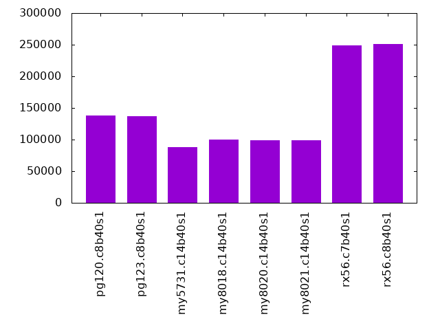
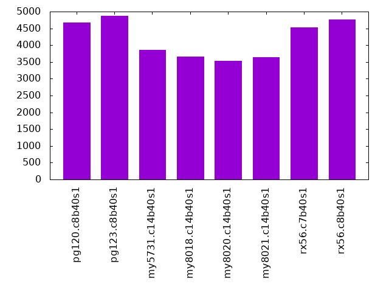
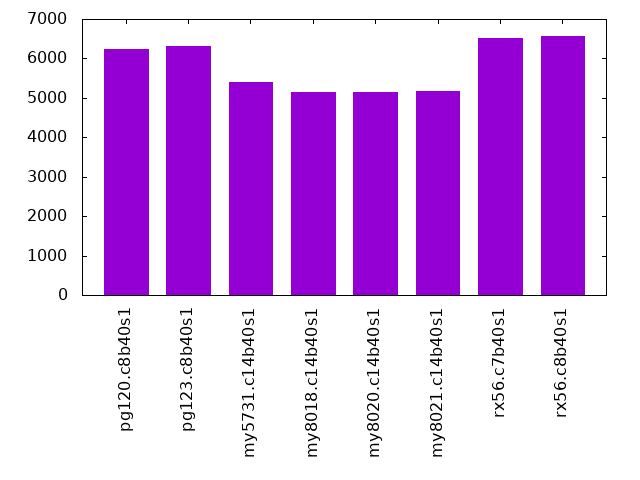
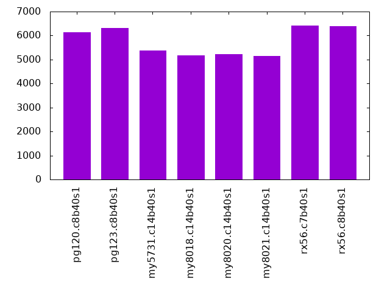
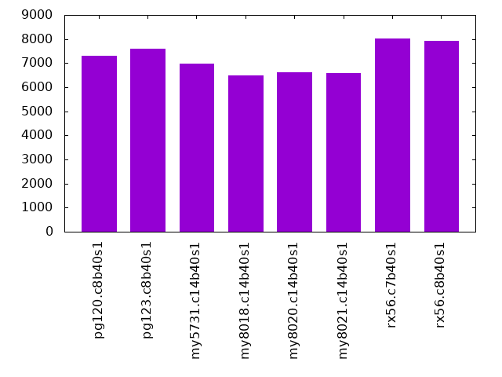

This is a report for Linkbench with Linkbench with maxid1=200m. It is generated by scripts. An overview of Linkbench is here. Below, by DBMS, I mean DBMS+version.config. An example is my8020.c10b40 where my means MySQL, 8020 is version 8.0.20 and c10b40 is the name for the configuration file. All configurations are currently stored here.
The test server is a c3.8xlarge host with 20,000 EBS PIOPs, 60G RAM and 16 CPU cores (HT disabled). Clients and the DBMS share one server.
The tested DBMS are:
Numbers are inserts/s for l.pre, indexed rows/s for l.post and transactions/s for the transaction tests (L*.P*). The range of values is split into 3 steps: bottom 25%, middle 50%, top 25%. Values in the bottom have a red background, values in the top have a green background. The l in l.pre and l.post stands for load. The L in L1.* to L6.* stands for loop and the transaction tests are run in that sequence. The P in L*.P8, L*.P12 and L*.P16 stands for parallel and represents the number of concurrent clients.
| dbms | l.pre | l.post | L1.P8 | L2.P8 | L3.P12 | L4.P12 | L5.P16 | L6.P16 |
|---|---|---|---|---|---|---|---|---|
| pg120.c8b40s1 | 350328 | 138326 | 4665 | 4629 | 6245 | 6127 | 7561 | 7296 |
| pg123.c8b40s1 | 350651 | 137438 | 4876 | 4679 | 6322 | 6310 | 7694 | 7604 |
| my5731.c14b40s1 | 144509 | 87597 | 3864 | 3810 | 5412 | 5384 | 6722 | 6983 |
| my8018.c14b40s1 | 179362 | 99540 | 3653 | 3657 | 5147 | 5163 | 6567 | 6488 |
| my8020.c14b40s1 | 212946 | 99260 | 3535 | 3499 | 5159 | 5217 | 6627 | 6626 |
| my8021.c14b40s1 | 208648 | 99111 | 3645 | 3680 | 5178 | 5159 | 6613 | 6580 |
| rx56.c7b40s1 | 159951 | 248832 | 4534 | 4558 | 6509 | 6406 | 8200 | 8031 |
| rx56.c8b40s1 | 161756 | 250846 | 4757 | 4621 | 6558 | 6384 | 8053 | 7936 |
l.pre: load 200 million rows (documents) without secondary index on Linktable.
Inserts/s average
HW performance results normalized by throughput. The legend is here
ips secs rpi rkbpi wkbpi cspi cpupi csecpq dsecpq csec dsec dbgb1 dbgb2 cnf 350328 4337 0.000 0.004 0.662 0.1 81 3.7 0.0 5602 0 272.9 312.9 pg120.c8b40s1 350651 4333 0.000 0.004 0.662 0.1 82 3.7 0.0 5548 0 272.9 312.9 pg123.c8b40s1 144509 10514 0.000 0.000 0.837 0.1 205 2.6 29.4 3998 44736 281.8 337.0 my5731.c14b40s1 179362 8471 0.000 0.000 0.867 0.2 143 3.0 21.2 4555 32172 289.5 370.7 my8018.c14b40s1 212946 7135 0.000 0.000 0.892 0.2 144 2.9 21.4 4449 32515 304.2 405.5 my8020.c14b40s1 208648 7282 0.000 0.000 0.894 0.2 149 3.0 22.2 4554 33698 305.0 402.0 my8021.c14b40s1 159951 9499 0.000 0.001 0.452 0.0 312 2.5 47.3 3827 71873 133.4 185.2 rx56.c7b40s1 161756 9393 0.000 0.001 0.456 0.0 320 2.5 48.4 3851 73598 68.4 119.0 rx56.c8b40s1
HW performance results not normalized by throughput. The legend is here
ips secs rps rmbps wmbps csps cpups cutil dutil vsz rss cnf 350328 4337 173 1 226 36329 28.5 1.292 0.000 0.1 0.0 pg120.c8b40s1 350651 4333 169 1 227 36680 28.9 1.280 0.000 0.1 0.0 pg123.c8b40s1 144509 10514 0 0 118 10370 29.7 0.380 4.255 46.4 43.6 my5731.c14b40s1 179362 8471 0 0 152 37381 25.6 0.538 3.798 45.3 43.8 my8018.c14b40s1 212946 7135 0 0 186 42773 30.6 0.624 4.557 45.3 43.7 my8020.c14b40s1 208648 7282 0 0 182 42211 31.1 0.625 4.628 45.3 43.7 my8021.c14b40s1 159951 9499 8 0 71 5995 50.0 0.403 7.566 9.5 7.3 rx56.c7b40s1 161756 9393 18 0 72 6058 51.8 0.410 7.835 9.7 7.1 rx56.c8b40s1
l.post: create secondary index on Linktable.
Indexed rows/s average
HW performance results normalized by throughput. The legend is here
ips secs rpi rkbpi wkbpi cspi cpupi csecpq dsecpq csec dsec dbgb1 dbgb2 cnf 138326 10984 0.008 0.134 0.259 0.0 33 0.0 0.0 0 0 367.6 407.7 pg120.c8b40s1 137438 11055 0.008 0.134 0.260 0.0 33 0.0 0.0 0 0 367.6 407.7 pg123.c8b40s1 87597 17345 0.008 0.635 0.785 0.0 26 0.0 32.7 0 49705 363.1 396.6 my5731.c14b40s1 99540 15264 0.008 0.629 0.787 0.0 16 0.0 -21.2 0 -32186 370.5 404.0 my8018.c14b40s1 99260 15307 0.008 0.630 0.787 0.0 16 0.0 24.3 0 36914 385.1 418.7 my8020.c14b40s1 99111 15330 0.008 0.628 0.787 0.0 16 0.0 25.2 0 38227 385.9 419.5 my8021.c14b40s1 248832 6106 0.003 0.097 0.113 0.0 12 0.0 49.3 0 74862 205.0 205.9 rx56.c7b40s1 250846 6057 0.003 0.075 0.085 0.0 14 0.0 51.0 0 77441 99.8 100.5 rx56.c8b40s1
HW performance results not normalized by throughput. The legend is here
ips secs rps rmbps wmbps csps cpups cutil dutil vsz rss cnf 138326 10984 1157 18 35 1822 4.6 0.000 0.000 NA NA pg120.c8b40s1 137438 11055 1152 18 35 1813 4.5 0.000 0.000 NA NA pg123.c8b40s1 87597 17345 721 54 67 3828 2.3 0.000 2.866 46.6 43.8 my5731.c14b40s1 99540 15264 801 61 77 3619 1.6 0.000 -2.109 0.1 0.0 my8018.c14b40s1 99260 15307 800 61 76 3783 1.5 0.000 2.412 45.5 43.9 my8020.c14b40s1 99111 15330 796 61 76 3757 1.6 0.000 2.494 45.5 43.9 my8021.c14b40s1 248832 6106 842 24 28 2068 2.9 0.000 12.260 62.8 44.4 rx56.c7b40s1 250846 6057 668 18 21 1658 3.6 0.000 12.785 62.7 44.2 rx56.c8b40s1
L1.P8: transactions with 8 clients, run for 3600 seconds.
Transactions/s average
HW performance results normalized by throughput. The legend is here
qps secs rpq rkbpq wkbpq cspq cpupq csecpq dsecpq csec dsec dbgb1 dbgb2 cnf 4665 3600 1.969 21.704 8.388 10.3 2043 90.4 -0.1 1517 -1 368.8 408.8 pg120.c8b40s1 4876 3600 1.957 21.508 8.411 10.3 2059 90.9 -0.1 1595 -1 368.8 408.9 pg123.c8b40s1 3864 3600 0.897 14.349 16.049 11.6 2070 168.3 367.5 2342 5112 386.9 420.4 my5731.c14b40s1 3653 3600 0.893 14.295 16.597 18.3 1688 158.6 429.9 2086 5654 398.9 432.4 my8018.c14b40s1 3535 3600 0.895 14.313 16.590 18.7 1717 158.3 436.7 2014 5558 413.2 446.8 my8020.c14b40s1 3645 3600 0.895 14.317 16.518 17.2 1721 161.6 419.8 2121 5508 414.3 447.8 my8021.c14b40s1 4534 3600 0.675 7.935 1.003 8.8 1738 161.7 311.8 2639 5090 206.2 207.0 rx56.c7b40s1 4757 3600 0.644 5.004 1.006 8.7 2146 162.4 325.8 2782 5579 100.8 101.7 rx56.c8b40s1
HW performance results not normalized by throughput. The legend is here
qps secs rps rmbps wmbps csps cpups cutil dutil vsz rss cnf 4665 3600 9187 99 38 47908 9.5 0.422 -0.000 0.1 0.0 pg120.c8b40s1 4876 3600 9542 102 40 50102 10.0 0.443 -0.000 0.1 0.0 pg123.c8b40s1 3864 3600 3465 54 61 44692 8.0 0.650 1.420 46.6 43.6 my5731.c14b40s1 3653 3600 3264 51 59 66944 6.2 0.579 1.571 45.6 43.8 my8018.c14b40s1 3535 3600 3162 49 57 66067 6.1 0.560 1.544 45.5 43.8 my8020.c14b40s1 3645 3600 3262 51 59 62768 6.3 0.589 1.530 45.6 43.7 my8021.c14b40s1 4534 3600 3060 35 4 40027 7.9 0.733 1.414 69.2 42.2 rx56.c7b40s1 4757 3600 3065 23 5 41417 10.2 0.773 1.550 70.3 42.4 rx56.c8b40s1
Reponse time for Link operations. The legend is here. Metric names that end with 9 are p99, x are max and m are mean. All values are in milliseconds.
al9 alx alm dl9 dlx dlm ul9 ulx ulm cl9 clx clm mg9 mgx mgm gll9 gllx gllm cnf 26 752.3 5.440 28 250.6 5.970 22 301.0 4.784 12 426.9 1.620 12 501.7 1.608 11 1194.8 1.368 pg120.c8b40s1 23 373.2 5.245 24 286.8 5.744 19 382.7 4.629 11 386.9 1.504 10 237.4 1.510 10 1270.5 1.318 pg123.c8b40s1 28 361.7 7.956 28 262.7 7.551 26 328.4 7.307 7 206.6 1.173 6 280.4 0.921 11 527.8 1.238 my5731.c14b40s1 20 455.5 9.266 20 546.8 8.615 19 513.7 8.700 4 275.4 0.997 4 904.2 0.798 8 1002.7 1.093 my8018.c14b40s1 24 538.8 9.593 23 495.4 8.898 22 482.7 8.988 5 291.2 1.049 4 433.9 0.827 8 1385.4 1.128 my8020.c14b40s1 22 277.9 9.297 21 197.2 8.630 21 355.3 8.728 4 142.5 1.005 4 208.5 0.797 8 315.1 1.110 my8021.c14b40s1 17 446.5 6.221 17 375.7 5.888 15 294.3 5.823 4 317.9 0.803 4 331.5 0.897 12 505.5 1.239 rx56.c7b40s1 16 437.0 5.947 16 241.2 5.598 15 455.4 5.695 4 340.7 0.607 4 425.0 0.823 12 879.9 1.141 rx56.c8b40s1
Reponse time for Node operations. The legend is here. Metric names that end with 9 are p99, x are max and m are mean. All values are in milliseconds.
an9 anx anm un9 unx unm dn9 dnx dnm gn9 gnx gnm cnf 8 133.7 1.794 14 203.5 2.972 12 153.0 2.625 7 500.7 0.943 pg120.c8b40s1 7 361.7 1.796 13 384.3 2.915 12 82.8 2.595 6 391.5 0.888 pg123.c8b40s1 11 212.7 4.269 16 284.1 5.244 15 164.7 5.239 7 238.9 1.116 my5731.c14b40s1 14 271.6 6.017 14 391.1 6.882 14 113.9 6.837 4 573.5 0.951 my8018.c14b40s1 15 214.3 6.066 16 265.3 7.001 15 169.2 6.900 4 362.3 0.999 my8020.c14b40s1 14 210.0 6.010 15 216.0 6.900 15 86.9 6.791 4 222.6 0.947 my8021.c14b40s1 11 107.4 4.827 14 209.3 5.432 14 82.9 5.445 4 509.0 0.826 rx56.c7b40s1 11 165.8 4.805 14 330.0 5.360 15 105.5 5.371 4 447.1 0.785 rx56.c8b40s1
L2.P8: transactions with 8 clients, run for 3600 seconds.
Transactions/s average
HW performance results normalized by throughput. The legend is here
qps secs rpq rkbpq wkbpq cspq cpupq csecpq dsecpq csec dsec dbgb1 dbgb2 cnf 4629 3600 2.034 22.447 8.682 10.6 2152 94.8 -0.1 1580 -1 369.2 409.2 pg120.c8b40s1 4679 3600 2.037 22.486 8.805 10.6 2209 95.0 -0.1 1600 -1 369.2 409.3 pg123.c8b40s1 3810 3600 0.895 14.326 15.212 11.5 2231 187.0 370.7 2565 5085 392.5 426.0 my5731.c14b40s1 3657 3600 0.893 14.280 15.392 18.2 1812 175.8 430.9 2315 5673 404.4 438.0 my8018.c14b40s1 3499 3600 0.893 14.288 15.435 18.6 1846 178.2 439.0 2245 5530 418.7 452.2 my8020.c14b40s1 3680 3600 0.894 14.304 15.310 17.0 1858 179.1 420.9 2373 5576 419.8 453.4 my8021.c14b40s1 4558 3600 0.674 7.921 1.004 8.9 1977 186.7 323.6 3064 5310 206.8 208.2 rx56.c7b40s1 4621 3600 0.645 5.013 1.011 8.8 2384 187.4 338.3 3117 5628 101.2 102.6 rx56.c8b40s1
HW performance results not normalized by throughput. The legend is here
qps secs rps rmbps wmbps csps cpups cutil dutil vsz rss cnf 4629 3600 9416 101 39 48880 10.0 0.439 -0.000 0.1 0.0 pg120.c8b40s1 4679 3600 9529 103 40 49552 10.3 0.445 -0.000 0.1 0.0 pg123.c8b40s1 3810 3600 3412 53 57 43901 8.5 0.713 1.413 46.6 43.6 my5731.c14b40s1 3657 3600 3264 51 55 66535 6.6 0.643 1.576 45.6 43.8 my8018.c14b40s1 3499 3600 3125 49 53 65231 6.5 0.624 1.536 45.6 43.8 my8020.c14b40s1 3680 3600 3290 51 55 62714 6.8 0.659 1.549 45.6 43.7 my8021.c14b40s1 4558 3600 3071 35 4 40471 9.0 0.851 1.475 71.1 42.3 rx56.c7b40s1 4621 3600 2980 23 5 40562 11.0 0.866 1.563 72.4 42.6 rx56.c8b40s1
Reponse time for Link operations. The legend is here. Metric names that end with 9 are p99, x are max and m are mean. All values are in milliseconds.
al9 alx alm dl9 dlx dlm ul9 ulx ulm cl9 clx clm mg9 mgx mgm gll9 gllx gllm cnf 25 269.8 5.629 28 200.9 6.122 20 283.4 4.725 11 339.2 1.533 11 359.9 1.580 12 974.1 1.448 pg120.c8b40s1 24 468.4 5.587 25 266.6 6.028 20 284.3 4.693 11 330.7 1.508 10 344.4 1.550 13 1472.6 1.442 pg123.c8b40s1 28 365.8 7.716 28 274.0 7.405 26 366.2 7.168 8 216.6 1.196 6 277.6 0.980 16 1548.0 1.363 my5731.c14b40s1 20 1005.1 9.051 19 656.7 8.438 19 830.0 8.558 4 272.2 0.995 4 1066.3 0.828 11 348.1 1.192 my8018.c14b40s1 24 852.1 9.421 23 815.2 8.805 22 726.8 8.868 5 368.5 1.069 4 626.5 0.880 12 446.8 1.239 my8020.c14b40s1 20 213.7 8.979 20 164.6 8.366 19 228.2 8.489 4 138.4 0.985 4 158.4 0.821 11 458.8 1.198 my8021.c14b40s1 16 819.5 6.110 16 249.5 5.742 14 271.2 5.731 4 252.7 0.762 4 296.5 0.880 17 771.5 1.342 rx56.c7b40s1 17 318.2 6.021 17 329.4 5.624 15 332.3 5.751 4 345.5 0.616 4 427.8 0.845 18 373.7 1.284 rx56.c8b40s1
Reponse time for Node operations. The legend is here. Metric names that end with 9 are p99, x are max and m are mean. All values are in milliseconds.
an9 anx anm un9 unx unm dn9 dnx dnm gn9 gnx gnm cnf 8 128.4 1.906 13 204.8 3.003 12 94.2 2.616 6 367.6 0.919 pg120.c8b40s1 8 216.6 1.916 13 266.9 3.006 12 122.0 2.609 6 428.3 0.900 pg123.c8b40s1 12 199.3 4.294 17 210.6 5.278 15 138.0 5.218 8 246.1 1.144 my5731.c14b40s1 13 333.1 5.975 14 334.0 6.871 14 109.2 6.807 4 390.9 0.942 my8018.c14b40s1 14 584.5 6.028 16 595.6 7.007 16 345.7 6.955 4 658.1 1.017 my8020.c14b40s1 13 220.2 5.946 15 226.7 6.848 14 101.3 6.743 4 221.5 0.929 my8021.c14b40s1 11 197.1 4.774 13 276.2 5.346 14 121.0 5.371 4 628.6 0.796 rx56.c7b40s1 12 134.2 4.841 15 287.8 5.413 15 153.6 5.430 4 396.8 0.797 rx56.c8b40s1
L3.P12: transactions with 12 clients, run for 3600 seconds.
Transactions/s average
HW performance results normalized by throughput. The legend is here
qps secs rpq rkbpq wkbpq cspq cpupq csecpq dsecpq csec dsec dbgb1 dbgb2 cnf 6245 3600 1.628 15.615 8.489 10.0 2616 99.7 -0.0 2242 -1 369.7 409.8 pg120.c8b40s1 6322 3600 1.619 15.455 8.577 10.0 2680 101.2 0.0 2304 0 369.8 409.8 pg123.c8b40s1 5412 3600 0.894 14.298 13.756 10.9 2496 212.3 380.9 4136 7422 398.1 431.7 my5731.c14b40s1 5147 3600 0.892 14.269 13.807 15.7 2086 196.5 413.9 3641 7669 410.0 443.6 my8018.c14b40s1 5159 3600 0.894 14.306 13.860 16.0 2091 195.4 420.8 3628 7816 424.4 458.0 my8020.c14b40s1 5178 3600 0.893 14.288 13.839 15.1 2133 199.3 411.2 3716 7666 425.5 459.0 my8021.c14b40s1 6509 3600 0.682 8.034 0.925 8.4 2460 215.3 343.0 5045 8037 207.6 208.6 rx56.c7b40s1 6558 3600 0.655 5.137 0.947 8.3 2767 212.6 358.3 5019 8458 101.5 102.7 rx56.c8b40s1
HW performance results not normalized by throughput. The legend is here
qps secs rps rmbps wmbps csps cpups cutil dutil vsz rss cnf 6245 3600 10165 95 52 62704 16.3 0.623 -0.000 0.1 0.0 pg120.c8b40s1 6322 3600 10234 95 53 63479 16.9 0.640 0.000 0.1 0.0 pg123.c8b40s1 5412 3600 4836 76 73 58779 13.5 1.149 2.062 46.7 43.6 my5731.c14b40s1 5147 3600 4590 72 69 80993 10.7 1.011 2.130 45.7 43.8 my8018.c14b40s1 5159 3600 4613 72 70 82792 10.8 1.008 2.171 45.7 43.8 my8020.c14b40s1 5178 3600 4624 72 70 78419 11.0 1.032 2.129 45.7 43.8 my8021.c14b40s1 6509 3600 4442 51 6 54780 16.0 1.401 2.232 75.9 42.8 rx56.c7b40s1 6558 3600 4294 33 6 54562 18.1 1.394 2.349 77.8 42.7 rx56.c8b40s1
Reponse time for Link operations. The legend is here. Metric names that end with 9 are p99, x are max and m are mean. All values are in milliseconds.
al9 alx alm dl9 dlx dlm ul9 ulx ulm cl9 clx clm mg9 mgx mgm gll9 gllx gllm cnf 28 413.7 6.457 31 320.4 6.748 23 347.8 5.400 12 257.7 1.652 11 339.3 1.673 15 1492.5 1.657 pg120.c8b40s1 27 543.6 6.453 29 338.9 6.708 23 316.6 5.373 11 286.6 1.615 11 357.0 1.633 15 2107.6 1.627 pg123.c8b40s1 28 343.0 8.005 28 332.2 7.681 26 373.4 7.541 7 264.5 1.214 7 443.5 1.050 19 557.6 1.518 my5731.c14b40s1 21 606.4 9.518 20 389.0 8.902 20 518.1 9.115 5 252.2 1.013 4 257.0 0.873 15 814.0 1.326 my8018.c14b40s1 21 772.8 9.505 21 397.9 8.888 20 777.1 9.094 4 347.7 1.017 4 1271.9 0.874 15 2206.2 1.325 my8020.c14b40s1 20 313.1 9.482 20 276.8 8.853 20 339.5 9.081 4 175.2 1.001 4 209.5 0.864 16 212.1 1.330 my8021.c14b40s1 17 582.7 6.347 17 580.1 5.949 15 579.5 5.961 4 354.7 0.773 4 318.2 0.910 23 1907.9 1.504 rx56.c7b40s1 18 485.8 6.313 17 306.5 5.861 16 397.1 6.019 4 372.8 0.637 4 551.6 0.877 23 985.8 1.438 rx56.c8b40s1
Reponse time for Node operations. The legend is here. Metric names that end with 9 are p99, x are max and m are mean. All values are in milliseconds.
an9 anx anm un9 unx unm dn9 dnx dnm gn9 gnx gnm cnf 9 193.7 2.152 14 239.7 3.333 13 286.6 2.944 7 399.6 0.987 pg120.c8b40s1 9 253.6 2.182 14 300.4 3.361 13 306.0 2.930 6 301.0 0.963 pg123.c8b40s1 12 123.8 4.667 17 805.7 5.697 16 159.5 5.631 8 806.2 1.173 my5731.c14b40s1 14 488.9 6.623 16 270.7 7.546 16 465.3 7.493 4 491.3 0.962 my8018.c14b40s1 13 303.4 6.542 15 321.3 7.486 15 261.5 7.425 4 334.5 0.967 my8020.c14b40s1 14 205.2 6.622 16 156.5 7.547 15 102.4 7.473 4 201.7 0.942 my8021.c14b40s1 12 171.7 4.992 14 582.7 5.569 14 203.6 5.578 4 413.2 0.816 rx56.c7b40s1 13 396.0 5.103 16 575.5 5.680 16 243.1 5.696 4 499.8 0.824 rx56.c8b40s1
L4.P12: transactions with 12 clients, run for 3600 seconds.
Transactions/s average
HW performance results normalized by throughput. The legend is here
qps secs rpq rkbpq wkbpq cspq cpupq csecpq dsecpq csec dsec dbgb1 dbgb2 cnf 6127 3600 1.847 19.360 8.977 10.5 3037 105.1 -0.0 2319 -1 370.3 410.4 pg120.c8b40s1 6310 3600 1.834 19.173 8.828 10.5 3010 106.0 0.0 2408 0 370.4 410.5 pg123.c8b40s1 5384 3600 0.891 14.257 13.333 10.8 2715 239.1 384.6 4634 7454 402.1 435.6 my5731.c14b40s1 5163 3600 0.888 14.211 13.452 15.6 2302 221.4 417.3 4115 7756 414.0 447.5 my8018.c14b40s1 5217 3600 0.889 14.231 13.453 15.9 2306 218.8 424.1 4110 7966 428.4 462.0 my8020.c14b40s1 5159 3600 0.889 14.229 13.421 15.0 2327 223.1 414.6 4144 7701 429.4 463.0 my8021.c14b40s1 6406 3600 0.677 7.914 0.839 8.5 2715 243.1 354.4 5607 8172 208.6 209.1 rx56.c7b40s1 6384 3600 0.648 5.040 0.834 8.4 3029 243.1 366.4 5588 8420 102.3 102.9 rx56.c8b40s1
HW performance results not normalized by throughput. The legend is here
qps secs rps rmbps wmbps csps cpups cutil dutil vsz rss cnf 6127 3600 11318 116 54 64633 18.6 0.644 -0.000 0.1 0.0 pg120.c8b40s1 6310 3600 11574 118 54 66463 19.0 0.669 0.000 0.1 0.0 pg123.c8b40s1 5384 3600 4797 75 70 58215 14.6 1.287 2.071 46.7 43.6 my5731.c14b40s1 5163 3600 4586 72 68 80731 11.9 1.143 2.154 45.7 43.8 my8018.c14b40s1 5217 3600 4640 73 69 82859 12.0 1.142 2.213 45.7 43.8 my8020.c14b40s1 5159 3600 4588 72 68 77623 12.0 1.151 2.139 45.7 43.8 my8021.c14b40s1 6406 3600 4335 50 5 54227 17.4 1.557 2.270 78.7 42.5 rx56.c7b40s1 6384 3600 4135 31 5 53536 19.3 1.552 2.339 80.5 42.6 rx56.c8b40s1
Reponse time for Link operations. The legend is here. Metric names that end with 9 are p99, x are max and m are mean. All values are in milliseconds.
al9 alx alm dl9 dlx dlm ul9 ulx ulm cl9 clx clm mg9 mgx mgm gll9 gllx gllm cnf 28 500.3 6.240 31 437.7 6.616 24 294.3 5.359 12 338.7 1.692 12 320.3 1.674 17 1366.8 1.819 pg120.c8b40s1 27 386.7 6.064 30 352.7 6.443 23 306.3 5.227 11 289.0 1.627 11 350.7 1.612 16 2315.2 1.772 pg123.c8b40s1 26 539.2 7.780 27 383.9 7.510 25 471.3 7.372 8 207.5 1.223 7 220.1 1.076 24 798.0 1.655 my5731.c14b40s1 19 422.0 9.263 19 280.0 8.688 19 456.9 8.925 5 288.6 1.009 4 746.1 0.889 20 614.3 1.443 my8018.c14b40s1 19 1052.7 9.182 19 214.8 8.622 18 1086.6 8.830 4 217.6 0.998 4 206.6 0.882 20 327.1 1.427 my8020.c14b40s1 20 267.6 9.317 20 350.6 8.733 19 279.2 8.963 4 207.0 0.996 4 198.9 0.881 21 433.9 1.448 my8021.c14b40s1 17 385.7 6.313 16 377.6 5.900 15 282.2 5.928 4 322.9 0.772 4 409.0 0.919 31 697.2 1.656 rx56.c7b40s1 19 396.4 6.355 18 378.1 5.880 17 377.9 6.057 4 355.1 0.639 5 414.9 0.896 31 986.3 1.607 rx56.c8b40s1
Reponse time for Node operations. The legend is here. Metric names that end with 9 are p99, x are max and m are mean. All values are in milliseconds.
an9 anx anm un9 unx unm dn9 dnx dnm gn9 gnx gnm cnf 10 159.4 2.256 15 311.2 3.473 14 153.8 3.037 7 426.9 1.001 pg120.c8b40s1 10 203.6 2.219 15 225.7 3.404 13 93.2 2.985 6 676.6 0.966 pg123.c8b40s1 13 173.2 4.676 18 209.1 5.691 16 118.0 5.598 8 361.0 1.170 my5731.c14b40s1 13 217.4 6.532 15 285.2 7.462 15 107.3 7.416 5 375.7 0.951 my8018.c14b40s1 13 1049.9 6.488 15 1058.4 7.408 15 128.4 7.350 4 283.6 0.938 my8020.c14b40s1 14 256.6 6.618 16 248.7 7.529 15 122.6 7.468 4 210.8 0.933 my8021.c14b40s1 11 173.3 4.959 14 319.9 5.532 14 173.7 5.550 4 334.6 0.818 rx56.c7b40s1 14 226.0 5.112 16 293.7 5.703 16 264.6 5.731 5 412.2 0.834 rx56.c8b40s1
L5.P16: transactions with 16 clients, run for 3600 seconds.
Transactions/s average
HW performance results normalized by throughput. The legend is here
qps secs rpq rkbpq wkbpq cspq cpupq csecpq dsecpq csec dsec dbgb1 dbgb2 cnf 7561 3600 1.714 17.269 8.443 10.3 3049 112.0 -0.0 3048 -1 371.1 411.2 pg120.c8b40s1 7694 3600 1.709 17.203 8.464 10.3 3066 113.3 0.0 3138 0 371.2 411.3 pg123.c8b40s1 6722 3600 0.887 14.190 12.637 10.3 3059 266.7 393.0 6454 9510 405.6 439.1 my5731.c14b40s1 6567 3600 0.884 14.145 12.743 14.1 2624 243.2 409.1 5750 9672 417.6 451.1 my8018.c14b40s1 6627 3600 0.886 14.184 12.701 14.5 2669 244.4 417.1 5831 9950 432.1 465.7 my8020.c14b40s1 6613 3600 0.886 14.170 12.675 13.9 2645 242.3 412.0 5770 9808 433.0 466.6 my8021.c14b40s1 8200 3600 0.683 8.006 0.766 8.1 3100 262.3 371.1 7744 10956 209.6 210.2 rx56.c7b40s1 8053 3600 0.654 5.146 0.787 8.1 3371 263.1 383.9 7628 11129 103.0 103.6 rx56.c8b40s1
HW performance results not normalized by throughput. The legend is here
qps secs rps rmbps wmbps csps cpups cutil dutil vsz rss cnf 7561 3600 12961 128 62 77754 23.1 0.847 -0.000 0.1 0.0 pg120.c8b40s1 7694 3600 13152 129 64 78974 23.6 0.872 0.000 0.1 0.0 pg123.c8b40s1 6722 3600 5962 93 83 69466 20.6 1.793 2.642 46.8 43.7 my5731.c14b40s1 6567 3600 5806 91 82 92756 17.2 1.597 2.687 45.9 43.8 my8018.c14b40s1 6627 3600 5875 92 82 96269 17.7 1.620 2.764 45.9 43.8 my8020.c14b40s1 6613 3600 5857 92 82 92173 17.5 1.603 2.724 45.9 43.8 my8021.c14b40s1 8200 3600 5598 64 6 66819 25.4 2.151 3.043 82.5 42.8 rx56.c7b40s1 8053 3600 5270 40 6 65024 27.1 2.119 3.091 84.7 42.9 rx56.c8b40s1
Reponse time for Link operations. The legend is here. Metric names that end with 9 are p99, x are max and m are mean. All values are in milliseconds.
al9 alx alm dl9 dlx dlm ul9 ulx ulm cl9 clx clm mg9 mgx mgm gll9 gllx gllm cnf 31 503.4 6.750 34 352.2 7.125 26 309.9 5.743 13 305.5 1.787 12 375.8 1.759 21 1281.3 2.019 pg120.c8b40s1 31 395.9 6.683 33 293.6 7.057 25 239.5 5.699 12 200.1 1.736 12 276.4 1.713 20 990.1 1.972 pg123.c8b40s1 29 394.7 8.164 29 327.2 7.910 27 536.6 7.811 8 239.6 1.264 8 591.7 1.143 31 942.8 1.827 my5731.c14b40s1 20 518.3 9.623 20 666.4 9.009 19 422.9 9.338 5 338.6 1.025 5 682.7 0.924 26 2090.4 1.578 my8018.c14b40s1 20 421.7 9.497 20 314.0 8.908 19 286.3 9.206 5 407.1 1.020 4 259.5 0.919 27 609.8 1.584 my8020.c14b40s1 20 258.2 9.581 20 206.7 8.988 19 301.7 9.296 5 154.1 1.011 4 265.9 0.913 26 811.4 1.566 my8021.c14b40s1 17 405.4 6.531 17 461.6 6.097 16 273.8 6.148 4 280.7 0.775 5 318.4 0.951 38 821.1 1.786 rx56.c7b40s1 21 339.7 6.674 21 373.5 6.162 19 424.6 6.362 4 349.1 0.667 5 429.4 0.942 40 671.4 1.753 rx56.c8b40s1
Reponse time for Node operations. The legend is here. Metric names that end with 9 are p99, x are max and m are mean. All values are in milliseconds.
an9 anx anm un9 unx unm dn9 dnx dnm gn9 gnx gnm cnf 12 195.9 2.542 17 260.4 3.785 16 174.1 3.360 7 388.8 1.067 pg120.c8b40s1 12 151.2 2.553 17 301.7 3.774 15 124.7 3.348 7 420.8 1.041 pg123.c8b40s1 14 235.4 5.073 20 333.0 6.145 18 213.9 6.044 9 360.7 1.244 my5731.c14b40s1 14 278.9 6.963 16 277.3 7.923 16 111.7 7.832 5 342.5 0.970 my8018.c14b40s1 14 126.8 6.868 16 267.1 7.821 16 120.6 7.747 4 269.7 0.963 my8020.c14b40s1 14 106.9 6.971 16 296.4 7.920 16 102.4 7.840 4 300.1 0.953 my8021.c14b40s1 12 227.0 5.139 15 229.1 5.728 15 159.3 5.758 5 405.9 0.837 rx56.c7b40s1 16 186.6 5.360 18 293.0 5.982 19 290.4 6.004 5 416.0 0.873 rx56.c8b40s1
L6.P16: transactions with 16 clients, run for 3600 seconds.
Transactions/s average
HW performance results normalized by throughput. The legend is here
qps secs rpq rkbpq wkbpq cspq cpupq csecpq dsecpq csec dsec dbgb1 dbgb2 cnf 7296 3600 1.723 17.173 8.959 10.4 3355 113.4 -0.0 2979 -1 371.9 412.0 pg120.c8b40s1 7604 3600 1.706 16.891 8.892 10.4 3383 114.3 0.0 3129 0 372.0 412.1 pg123.c8b40s1 6983 3600 0.885 14.160 12.278 10.3 3239 287.0 395.4 7214 9939 408.4 442.0 my5731.c14b40s1 6488 3600 0.881 14.094 12.358 14.1 2806 263.8 411.5 6162 9612 420.3 453.9 my8018.c14b40s1 6626 3600 0.884 14.138 12.336 14.4 2852 263.5 419.9 6286 10015 434.9 468.5 my8020.c14b40s1 6580 3600 0.883 14.133 12.313 13.9 2822 262.5 414.8 6219 9826 435.8 469.4 my8021.c14b40s1 8031 3600 0.685 8.013 0.779 8.2 3366 288.7 384.1 8348 11104 210.6 211.3 rx56.c7b40s1 7936 3600 0.657 5.186 0.822 8.1 3609 284.9 395.9 8140 11311 103.8 104.5 rx56.c8b40s1
HW performance results not normalized by throughput. The legend is here
qps secs rps rmbps wmbps csps cpups cutil dutil vsz rss cnf 7296 3600 12569 122 64 76130 24.5 0.828 -0.000 0.1 0.0 pg120.c8b40s1 7604 3600 12975 125 66 78980 25.7 0.869 0.000 0.1 0.0 pg123.c8b40s1 6983 3600 6180 97 84 71613 22.6 2.004 2.761 46.8 43.7 my5731.c14b40s1 6488 3600 5715 89 78 91485 18.2 1.712 2.670 45.9 43.8 my8018.c14b40s1 6626 3600 5855 91 80 95552 18.9 1.746 2.782 45.9 43.8 my8020.c14b40s1 6580 3600 5812 91 79 91169 18.6 1.727 2.729 45.9 43.8 my8021.c14b40s1 8031 3600 5501 63 6 65765 27.0 2.319 3.084 96.2 42.8 rx56.c7b40s1 7936 3600 5216 40 6 64235 28.6 2.261 3.142 89.3 42.8 rx56.c8b40s1
Reponse time for Link operations. The legend is here. Metric names that end with 9 are p99, x are max and m are mean. All values are in milliseconds.
al9 alx alm dl9 dlx dlm ul9 ulx ulm cl9 clx clm mg9 mgx mgm gll9 gllx gllm cnf 33 367.2 6.789 37 452.2 7.182 27 336.6 5.882 13 292.0 1.863 13 270.3 1.823 24 1658.1 2.170 pg120.c8b40s1 30 432.9 6.537 33 259.1 6.879 25 324.9 5.714 12 293.3 1.749 12 263.8 1.720 24 1864.6 2.095 pg123.c8b40s1 23 409.0 7.742 23 308.6 7.498 22 342.4 7.454 7 222.0 1.190 7 382.7 1.102 37 665.3 1.872 my5731.c14b40s1 20 852.2 9.561 20 560.4 8.954 20 639.2 9.296 5 310.4 1.037 5 511.9 0.946 34 2207.2 1.688 my8018.c14b40s1 19 464.9 9.346 19 269.9 8.770 18 379.7 9.083 5 169.1 1.012 5 317.6 0.929 33 999.7 1.671 my8020.c14b40s1 20 283.3 9.499 20 267.6 8.896 19 281.5 9.235 4 121.9 1.005 4 259.7 0.921 33 591.2 1.664 my8021.c14b40s1 18 394.0 6.562 17 274.0 6.108 16 359.9 6.181 4 328.3 0.775 5 412.1 0.966 48 1131.5 1.924 rx56.c7b40s1 22 424.8 6.736 22 308.2 6.213 21 449.4 6.435 4 463.1 0.661 5 676.4 0.934 49 680.1 1.864 rx56.c8b40s1
Reponse time for Node operations. The legend is here. Metric names that end with 9 are p99, x are max and m are mean. All values are in milliseconds.
an9 anx anm un9 unx unm dn9 dnx dnm gn9 gnx gnm cnf 12 226.2 2.620 18 303.6 3.922 16 209.2 3.421 8 422.7 1.104 pg120.c8b40s1 12 191.0 2.638 17 284.3 3.839 16 167.3 3.383 7 278.3 1.041 pg123.c8b40s1 13 271.2 4.994 17 223.6 5.973 16 120.8 5.875 7 273.3 1.153 my5731.c14b40s1 15 254.1 6.927 17 420.2 7.913 16 264.8 7.811 5 402.3 0.991 my8018.c14b40s1 14 267.3 6.811 16 324.6 7.767 15 264.9 7.689 5 322.9 0.959 my8020.c14b40s1 15 264.6 6.980 17 267.1 7.919 16 96.7 7.838 4 270.5 0.948 my8021.c14b40s1 13 188.4 5.158 15 453.5 5.748 15 275.2 5.779 5 522.7 0.845 rx56.c7b40s1 17 264.3 5.441 20 330.6 6.060 20 298.3 6.067 5 521.3 0.860 rx56.c8b40s1
l.pre: load 200 million rows (documents) without secondary index on Linktable
HW performance results for all DBMS tested, not just the ones listed above. Most are normaolized by throughput. The legend for results is here.
ips secs rpi rkbpi wkbpi cspi cpupi csecpq dsecpq csec dsec dbgb1 dbgb2 cnf 350651 4333 0.000 0.004 0.662 0.1 82 3.7 0.0 5548 0 272.9 312.9 pg123.c8b40s1 208648 7282 0.000 0.000 0.894 0.2 149 3.0 22.2 4554 33698 305.0 402.0 my8021.c14b40s1 161756 9393 0.000 0.001 0.456 0.0 320 2.5 48.4 3851 73598 68.4 119.0 rx56.c8b40s1 - 350328 4337 0.000 0.004 0.662 0.1 81 3.7 0.0 5602 0 272.9 312.9 pg120.c8b40s1 350651 4333 0.000 0.004 0.662 0.1 82 3.7 0.0 5548 0 272.9 312.9 pg123.c8b40s1 - 144509 10514 0.000 0.000 0.837 0.1 205 2.6 29.4 3998 44736 281.8 337.0 my5731.c14b40s1 179362 8471 0.000 0.000 0.867 0.2 143 3.0 21.2 4555 32172 289.5 370.7 my8018.c14b40s1 212946 7135 0.000 0.000 0.892 0.2 144 2.9 21.4 4449 32515 304.2 405.5 my8020.c14b40s1 208648 7282 0.000 0.000 0.894 0.2 149 3.0 22.2 4554 33698 305.0 402.0 my8021.c14b40s1 - 102404 14837 0.000 0.000 0.879 0.1 219 2.7 31.5 4147 47936 307.1 361.3 my5731.c15b40s1 117699 12909 0.000 0.000 0.885 0.3 151 2.8 23.6 4311 35815 306.3 375.1 my8018.c15b40s1 73584 20648 0.000 0.000 0.896 0.3 153 2.9 24.1 4426 36619 319.6 380.5 my8020.c15b40s1 71726 21183 0.000 0.000 0.915 0.3 157 2.8 25.0 4264 37942 329.3 388.9 my8021.c15b40s1 - 159951 9499 0.000 0.001 0.452 0.0 312 2.5 47.3 3827 71873 133.4 185.2 rx56.c7b40s1 161756 9393 0.000 0.001 0.456 0.0 320 2.5 48.4 3851 73598 68.4 119.0 rx56.c8b40s1 - 343827 4419 0.001 0.004 0.662 0.1 83 3.8 0.0 5801 0 272.9 312.9 pg123.c8b40s1vac0 346572 4384 0.001 0.004 0.662 0.1 83 3.7 0.0 5658 0 272.9 312.9 pg123.c8b40s1vac1
HW performance results for all DBMS tested, not just the ones listed above. Not normalized by throughput. The legend for results is here.
ips secs rps rmbps wmbps csps cpups cutil dutil vsz rss cnf 350651 4333 169 1 227 36680 28.9 1.280 0.000 0.1 0.0 pg123.c8b40s1 208648 7282 0 0 182 42211 31.1 0.625 4.628 45.3 43.7 my8021.c14b40s1 161756 9393 18 0 72 6058 51.8 0.410 7.835 9.7 7.1 rx56.c8b40s1 - 350328 4337 173 1 226 36329 28.5 1.292 0.000 0.1 0.0 pg120.c8b40s1 350651 4333 169 1 227 36680 28.9 1.280 0.000 0.1 0.0 pg123.c8b40s1 - 144509 10514 0 0 118 10370 29.7 0.380 4.255 46.4 43.6 my5731.c14b40s1 179362 8471 0 0 152 37381 25.6 0.538 3.798 45.3 43.8 my8018.c14b40s1 212946 7135 0 0 186 42773 30.6 0.624 4.557 45.3 43.7 my8020.c14b40s1 208648 7282 0 0 182 42211 31.1 0.625 4.628 45.3 43.7 my8021.c14b40s1 - 102404 14837 0 0 88 13133 22.4 0.280 3.231 48.7 46.1 my5731.c15b40s1 117699 12909 0 0 102 33722 17.7 0.334 2.774 48.3 46.2 my8018.c15b40s1 73584 20648 0 0 64 21881 11.3 0.214 1.773 48.3 46.2 my8020.c15b40s1 71726 21183 0 0 64 22242 11.2 0.201 1.791 48.3 46.2 my8021.c15b40s1 - 159951 9499 8 0 71 5995 50.0 0.403 7.566 9.5 7.3 rx56.c7b40s1 161756 9393 18 0 72 6058 51.8 0.410 7.835 9.7 7.1 rx56.c8b40s1 - 343827 4419 173 1 222 34925 28.5 1.313 0.000 0.1 0.0 pg123.c8b40s1vac0 346572 4384 174 1 224 34931 28.7 1.291 0.000 0.1 0.0 pg123.c8b40s1vac1
l.post: create secondary index on Linktable
HW performance results for all DBMS tested, not just the ones listed above. Most are normaolized by throughput. The legend for results is here.
ips secs rpi rkbpi wkbpi cspi cpupi csecpq dsecpq csec dsec dbgb1 dbgb2 cnf 137438 11055 0.008 0.134 0.260 0.0 33 0.0 0.0 0 0 367.6 407.7 pg123.c8b40s1 99111 15330 0.008 0.628 0.787 0.0 16 0.0 25.2 0 38227 385.9 419.5 my8021.c14b40s1 250846 6057 0.003 0.075 0.085 0.0 14 0.0 51.0 0 77441 99.8 100.5 rx56.c8b40s1 - 138326 10984 0.008 0.134 0.259 0.0 33 0.0 0.0 0 0 367.6 407.7 pg120.c8b40s1 137438 11055 0.008 0.134 0.260 0.0 33 0.0 0.0 0 0 367.6 407.7 pg123.c8b40s1 - 87597 17345 0.008 0.635 0.785 0.0 26 0.0 32.7 0 49705 363.1 396.6 my5731.c14b40s1 99540 15264 0.008 0.629 0.787 0.0 16 0.0 -21.2 0 -32186 370.5 404.0 my8018.c14b40s1 99260 15307 0.008 0.630 0.787 0.0 16 0.0 24.3 0 36914 385.1 418.7 my8020.c14b40s1 99111 15330 0.008 0.628 0.787 0.0 16 0.0 25.2 0 38227 385.9 419.5 my8021.c14b40s1 - 67642 22462 0.012 0.648 0.788 0.1 30 0.0 35.3 0 53697 390.8 424.3 my5731.c15b40s1 75855 20030 0.012 0.642 0.810 0.1 17 0.0 27.2 0 41330 388.8 422.4 my8018.c15b40s1 75038 20248 0.012 0.642 0.822 0.1 16 0.0 27.8 0 42251 402.0 436.9 my8020.c15b40s1 71998 21103 0.012 0.641 0.821 0.1 17 0.0 28.7 0 43615 411.7 446.5 my8021.c15b40s1 - 248832 6106 0.003 0.097 0.113 0.0 12 0.0 49.3 0 74862 205.0 205.9 rx56.c7b40s1 250846 6057 0.003 0.075 0.085 0.0 14 0.0 51.0 0 77441 99.8 100.5 rx56.c8b40s1 - 138831 10944 0.008 0.133 0.259 0.0 33 0.0 0.0 0 0 367.6 407.7 pg123.c8b40s1vac0 138288 10987 0.008 0.133 0.259 0.0 33 0.0 0.0 0 0 367.6 407.7 pg123.c8b40s1vac1
HW performance results for all DBMS tested, not just the ones listed above. Not normalized by throughput. The legend for results is here.
ips secs rps rmbps wmbps csps cpups cutil dutil vsz rss cnf 137438 11055 1152 18 35 1813 4.5 0.000 0.000 NA NA pg123.c8b40s1 99111 15330 796 61 76 3757 1.6 0.000 2.494 45.5 43.9 my8021.c14b40s1 250846 6057 668 18 21 1658 3.6 0.000 12.785 62.7 44.2 rx56.c8b40s1 - 138326 10984 1157 18 35 1822 4.6 0.000 0.000 NA NA pg120.c8b40s1 137438 11055 1152 18 35 1813 4.5 0.000 0.000 NA NA pg123.c8b40s1 - 87597 17345 721 54 67 3828 2.3 0.000 2.866 46.6 43.8 my5731.c14b40s1 99540 15264 801 61 77 3619 1.6 0.000 -2.109 0.1 0.0 my8018.c14b40s1 99260 15307 800 61 76 3783 1.5 0.000 2.412 45.5 43.9 my8020.c14b40s1 99111 15330 796 61 76 3757 1.6 0.000 2.494 45.5 43.9 my8021.c14b40s1 - 67642 22462 831 43 52 3835 2.0 0.000 2.391 49.0 46.4 my5731.c15b40s1 75855 20030 904 48 60 4944 1.3 0.000 2.063 48.7 46.6 my8018.c15b40s1 75038 20248 895 47 60 5343 1.2 0.000 2.087 48.6 46.6 my8020.c15b40s1 71998 21103 855 45 58 5165 1.2 0.000 2.067 48.7 46.6 my8021.c15b40s1 - 248832 6106 842 24 28 2068 2.9 0.000 12.260 62.8 44.4 rx56.c7b40s1 250846 6057 668 18 21 1658 3.6 0.000 12.785 62.7 44.2 rx56.c8b40s1 - 138831 10944 1168 18 35 1850 4.6 0.000 0.000 NA NA pg123.c8b40s1vac0 138288 10987 1164 18 35 1841 4.5 0.000 0.000 NA NA pg123.c8b40s1vac1
L1.P8: transactions with 8 clients, run for 3600 seconds
HW performance results for all DBMS tested, not just the ones listed above. Most are normaolized by throughput. The legend for results is here.
qps secs rpq rkbpq wkbpq cspq cpupq csecpq dsecpq csec dsec dbgb1 dbgb2 cnf 4876 3600 1.957 21.508 8.411 10.3 2059 90.9 -0.1 1595 -1 368.8 408.9 pg123.c8b40s1 3645 3600 0.895 14.317 16.518 17.2 1721 161.6 419.8 2121 5508 414.3 447.8 my8021.c14b40s1 4757 3600 0.644 5.004 1.006 8.7 2146 162.4 325.8 2782 5579 100.8 101.7 rx56.c8b40s1 - 4665 3600 1.969 21.704 8.388 10.3 2043 90.4 -0.1 1517 -1 368.8 408.8 pg120.c8b40s1 4876 3600 1.957 21.508 8.411 10.3 2059 90.9 -0.1 1595 -1 368.8 408.9 pg123.c8b40s1 - 3864 3600 0.897 14.349 16.049 11.6 2070 168.3 367.5 2342 5112 386.9 420.4 my5731.c14b40s1 3653 3600 0.893 14.295 16.597 18.3 1688 158.6 429.9 2086 5654 398.9 432.4 my8018.c14b40s1 3535 3600 0.895 14.313 16.590 18.7 1717 158.3 436.7 2014 5558 413.2 446.8 my8020.c14b40s1 3645 3600 0.895 14.317 16.518 17.2 1721 161.6 419.8 2121 5508 414.3 447.8 my8021.c14b40s1 - 4314 3600 0.906 7.250 9.330 11.5 1880 167.1 349.9 2594 5434 404.4 437.9 my5731.c15b40s1 3911 3600 0.905 7.237 9.495 17.9 1661 161.0 423.1 2267 5957 411.1 444.7 my8018.c15b40s1 3844 3600 0.907 7.254 9.465 18.2 1696 161.5 429.9 2235 5949 424.1 458.9 my8020.c15b40s1 3762 3600 0.907 7.259 9.513 17.1 1708 158.7 416.3 2150 5638 433.5 468.3 my8021.c15b40s1 - 4534 3600 0.675 7.935 1.003 8.8 1738 161.7 311.8 2639 5090 206.2 207.0 rx56.c7b40s1 4757 3600 0.644 5.004 1.006 8.7 2146 162.4 325.8 2782 5579 100.8 101.7 rx56.c8b40s1 - 4244 3600 1.388 11.126 10.215 9.8 2249 84.0 -0.1 1283 -1 368.7 408.7 pg123.c8b40s1vac0 5251 3600 1.144 9.173 5.759 8.8 1583 86.8 -0.1 1641 -1 368.9 409.0 pg123.c8b40s1vac1
HW performance results for all DBMS tested, not just the ones listed above. Not normalized by throughput. The legend for results is here.
qps secs rps rmbps wmbps csps cpups cutil dutil vsz rss cnf 4876 3600 9542 102 40 50102 10.0 0.443 -0.000 0.1 0.0 pg123.c8b40s1 3645 3600 3262 51 59 62768 6.3 0.589 1.530 45.6 43.7 my8021.c14b40s1 4757 3600 3065 23 5 41417 10.2 0.773 1.550 70.3 42.4 rx56.c8b40s1 - 4665 3600 9187 99 38 47908 9.5 0.422 -0.000 0.1 0.0 pg120.c8b40s1 4876 3600 9542 102 40 50102 10.0 0.443 -0.000 0.1 0.0 pg123.c8b40s1 - 3864 3600 3465 54 61 44692 8.0 0.650 1.420 46.6 43.6 my5731.c14b40s1 3653 3600 3264 51 59 66944 6.2 0.579 1.571 45.6 43.8 my8018.c14b40s1 3535 3600 3162 49 57 66067 6.1 0.560 1.544 45.5 43.8 my8020.c14b40s1 3645 3600 3262 51 59 62768 6.3 0.589 1.530 45.6 43.7 my8021.c14b40s1 - 4314 3600 3910 31 39 49667 8.1 0.721 1.509 49.0 46.1 my5731.c15b40s1 3911 3600 3538 28 36 70166 6.5 0.630 1.655 48.8 46.3 my8018.c15b40s1 3844 3600 3486 27 36 70073 6.5 0.621 1.653 48.7 46.3 my8020.c15b40s1 3762 3600 3414 27 35 64426 6.4 0.597 1.566 48.7 46.2 my8021.c15b40s1 - 4534 3600 3060 35 4 40027 7.9 0.733 1.414 69.2 42.2 rx56.c7b40s1 4757 3600 3065 23 5 41417 10.2 0.773 1.550 70.3 42.4 rx56.c8b40s1 - 4244 3600 5889 46 42 41588 9.5 0.356 -0.000 0.1 0.0 pg123.c8b40s1vac0 5251 3600 6008 47 30 46339 8.3 0.456 -0.000 0.1 0.0 pg123.c8b40s1vac1
L2.P8: transactions with 8 clients, run for 3600 seconds
HW performance results for all DBMS tested, not just the ones listed above. Most are normaolized by throughput. The legend for results is here.
qps secs rpq rkbpq wkbpq cspq cpupq csecpq dsecpq csec dsec dbgb1 dbgb2 cnf 4679 3600 2.037 22.486 8.805 10.6 2209 95.0 -0.1 1600 -1 369.2 409.3 pg123.c8b40s1 3680 3600 0.894 14.304 15.310 17.0 1858 179.1 420.9 2373 5576 419.8 453.4 my8021.c14b40s1 4621 3600 0.645 5.013 1.011 8.8 2384 187.4 338.3 3117 5628 101.2 102.6 rx56.c8b40s1 - 4629 3600 2.034 22.447 8.682 10.6 2152 94.8 -0.1 1580 -1 369.2 409.2 pg120.c8b40s1 4679 3600 2.037 22.486 8.805 10.6 2209 95.0 -0.1 1600 -1 369.2 409.3 pg123.c8b40s1 - 3810 3600 0.895 14.326 15.212 11.5 2231 187.0 370.7 2565 5085 392.5 426.0 my5731.c14b40s1 3657 3600 0.893 14.280 15.392 18.2 1812 175.8 430.9 2315 5673 404.4 438.0 my8018.c14b40s1 3499 3600 0.893 14.288 15.435 18.6 1846 178.2 439.0 2245 5530 418.7 452.2 my8020.c14b40s1 3680 3600 0.894 14.304 15.310 17.0 1858 179.1 420.9 2373 5576 419.8 453.4 my8021.c14b40s1 - 4281 3600 0.909 7.273 8.962 11.5 2073 188.0 354.1 2897 5458 409.0 442.5 my5731.c15b40s1 3863 3600 0.907 7.254 9.203 18.0 1805 179.4 426.6 2494 5933 415.4 449.0 my8018.c15b40s1 3703 3600 0.907 7.256 9.123 18.3 1836 178.1 432.8 2374 5769 428.2 463.1 my8020.c15b40s1 3714 3600 0.910 7.276 9.159 17.1 1853 177.4 420.0 2372 5615 437.7 472.5 my8021.c15b40s1 - 4558 3600 0.674 7.921 1.004 8.9 1977 186.7 323.6 3064 5310 206.8 208.2 rx56.c7b40s1 4621 3600 0.645 5.013 1.011 8.8 2384 187.4 338.3 3117 5628 101.2 102.6 rx56.c8b40s1 - 4248 3600 1.394 11.178 9.784 9.9 2465 87.9 0.0 1344 0 369.2 409.2 pg123.c8b40s1vac0 5113 3600 1.164 9.329 5.885 9.1 1937 90.3 -0.1 1663 -1 369.6 409.6 pg123.c8b40s1vac1
HW performance results for all DBMS tested, not just the ones listed above. Not normalized by throughput. The legend for results is here.
qps secs rps rmbps wmbps csps cpups cutil dutil vsz rss cnf 4679 3600 9529 103 40 49552 10.3 0.445 -0.000 0.1 0.0 pg123.c8b40s1 3680 3600 3290 51 55 62714 6.8 0.659 1.549 45.6 43.7 my8021.c14b40s1 4621 3600 2980 23 5 40562 11.0 0.866 1.563 72.4 42.6 rx56.c8b40s1 - 4629 3600 9416 101 39 48880 10.0 0.439 -0.000 0.1 0.0 pg120.c8b40s1 4679 3600 9529 103 40 49552 10.3 0.445 -0.000 0.1 0.0 pg123.c8b40s1 - 3810 3600 3412 53 57 43901 8.5 0.713 1.413 46.6 43.6 my5731.c14b40s1 3657 3600 3264 51 55 66535 6.6 0.643 1.576 45.6 43.8 my8018.c14b40s1 3499 3600 3125 49 53 65231 6.5 0.624 1.536 45.6 43.8 my8020.c14b40s1 3680 3600 3290 51 55 62714 6.8 0.659 1.549 45.6 43.7 my8021.c14b40s1 - 4281 3600 3892 30 37 49208 8.9 0.805 1.516 49.0 46.1 my5731.c15b40s1 3863 3600 3503 27 35 69365 7.0 0.693 1.648 48.8 46.3 my8018.c15b40s1 3703 3600 3358 26 33 67846 6.8 0.659 1.603 48.7 46.3 my8020.c15b40s1 3714 3600 3378 26 33 63692 6.9 0.659 1.560 48.8 46.2 my8021.c15b40s1 - 4558 3600 3071 35 4 40471 9.0 0.851 1.475 71.1 42.3 rx56.c7b40s1 4621 3600 2980 23 5 40562 11.0 0.866 1.563 72.4 42.6 rx56.c8b40s1 - 4248 3600 5922 46 41 42143 10.5 0.373 0.000 0.1 0.0 pg123.c8b40s1vac0 5113 3600 5950 47 29 46368 9.9 0.462 -0.000 0.1 0.0 pg123.c8b40s1vac1
L3.P12: transactions with 12 clients, run for 3600 seconds
HW performance results for all DBMS tested, not just the ones listed above. Most are normaolized by throughput. The legend for results is here.
qps secs rpq rkbpq wkbpq cspq cpupq csecpq dsecpq csec dsec dbgb1 dbgb2 cnf 6322 3600 1.619 15.455 8.577 10.0 2680 101.2 0.0 2304 0 369.8 409.8 pg123.c8b40s1 5178 3600 0.893 14.288 13.839 15.1 2133 199.3 411.2 3716 7666 425.5 459.0 my8021.c14b40s1 6558 3600 0.655 5.137 0.947 8.3 2767 212.6 358.3 5019 8458 101.5 102.7 rx56.c8b40s1 - 6245 3600 1.628 15.615 8.489 10.0 2616 99.7 -0.0 2242 -1 369.7 409.8 pg120.c8b40s1 6322 3600 1.619 15.455 8.577 10.0 2680 101.2 0.0 2304 0 369.8 409.8 pg123.c8b40s1 - 5412 3600 0.894 14.298 13.756 10.9 2496 212.3 380.9 4136 7422 398.1 431.7 my5731.c14b40s1 5147 3600 0.892 14.269 13.807 15.7 2086 196.5 413.9 3641 7669 410.0 443.6 my8018.c14b40s1 5159 3600 0.894 14.306 13.860 16.0 2091 195.4 420.8 3628 7816 424.4 458.0 my8020.c14b40s1 5178 3600 0.893 14.288 13.839 15.1 2133 199.3 411.2 3716 7666 425.5 459.0 my8021.c14b40s1 - 5610 3600 0.911 7.286 8.149 10.9 2320 210.4 362.8 4248 7328 413.9 447.4 my5731.c15b40s1 5443 3600 0.906 7.247 8.185 15.6 2096 198.9 411.9 3897 8072 420.4 453.9 my8018.c15b40s1 5335 3600 0.908 7.261 8.133 16.0 2103 198.0 418.9 3802 8045 433.2 468.0 my8020.c15b40s1 5310 3600 0.911 7.285 8.137 15.3 2121 197.8 411.7 3782 7871 442.7 477.5 my8021.c15b40s1 - 6509 3600 0.682 8.034 0.925 8.4 2460 215.3 343.0 5045 8037 207.6 208.6 rx56.c7b40s1 6558 3600 0.655 5.137 0.947 8.3 2767 212.6 358.3 5019 8458 101.5 102.7 rx56.c8b40s1 - 5933 3600 1.390 11.142 9.152 9.8 2773 97.5 0.0 2083 0 369.9 410.0 pg123.c8b40s1vac0 7087 3600 1.184 9.493 5.727 9.3 2372 98.3 -0.0 2508 -1 370.4 410.5 pg123.c8b40s1vac1
HW performance results for all DBMS tested, not just the ones listed above. Not normalized by throughput. The legend for results is here.
qps secs rps rmbps wmbps csps cpups cutil dutil vsz rss cnf 6322 3600 10234 95 53 63479 16.9 0.640 0.000 0.1 0.0 pg123.c8b40s1 5178 3600 4624 72 70 78419 11.0 1.032 2.129 45.7 43.8 my8021.c14b40s1 6558 3600 4294 33 6 54562 18.1 1.394 2.349 77.8 42.7 rx56.c8b40s1 - 6245 3600 10165 95 52 62704 16.3 0.623 -0.000 0.1 0.0 pg120.c8b40s1 6322 3600 10234 95 53 63479 16.9 0.640 0.000 0.1 0.0 pg123.c8b40s1 - 5412 3600 4836 76 73 58779 13.5 1.149 2.062 46.7 43.6 my5731.c14b40s1 5147 3600 4590 72 69 80993 10.7 1.011 2.130 45.7 43.8 my8018.c14b40s1 5159 3600 4613 72 70 82792 10.8 1.008 2.171 45.7 43.8 my8020.c14b40s1 5178 3600 4624 72 70 78419 11.0 1.032 2.129 45.7 43.8 my8021.c14b40s1 - 5610 3600 5109 40 45 61307 13.0 1.180 2.036 49.1 46.1 my5731.c15b40s1 5443 3600 4931 39 44 85064 11.4 1.082 2.242 48.9 46.3 my8018.c15b40s1 5335 3600 4842 38 42 85348 11.2 1.056 2.235 48.8 46.3 my8020.c15b40s1 5310 3600 4835 38 42 81150 11.3 1.050 2.186 48.9 46.3 my8021.c15b40s1 - 6509 3600 4442 51 6 54780 16.0 1.401 2.232 75.9 42.8 rx56.c7b40s1 6558 3600 4294 33 6 54562 18.1 1.394 2.349 77.8 42.7 rx56.c8b40s1 - 5933 3600 8246 65 53 58303 16.4 0.579 0.000 0.1 0.0 pg123.c8b40s1vac0 7087 3600 8391 66 40 65864 16.8 0.697 -0.000 0.1 0.0 pg123.c8b40s1vac1
L4.P12: transactions with 12 clients, run for 3600 seconds
HW performance results for all DBMS tested, not just the ones listed above. Most are normaolized by throughput. The legend for results is here.
qps secs rpq rkbpq wkbpq cspq cpupq csecpq dsecpq csec dsec dbgb1 dbgb2 cnf 6310 3600 1.834 19.173 8.828 10.5 3010 106.0 0.0 2408 0 370.4 410.5 pg123.c8b40s1 5159 3600 0.889 14.229 13.421 15.0 2327 223.1 414.6 4144 7701 429.4 463.0 my8021.c14b40s1 6384 3600 0.648 5.040 0.834 8.4 3029 243.1 366.4 5588 8420 102.3 102.9 rx56.c8b40s1 - 6127 3600 1.847 19.360 8.977 10.5 3037 105.1 -0.0 2319 -1 370.3 410.4 pg120.c8b40s1 6310 3600 1.834 19.173 8.828 10.5 3010 106.0 0.0 2408 0 370.4 410.5 pg123.c8b40s1 - 5384 3600 0.891 14.257 13.333 10.8 2715 239.1 384.6 4634 7454 402.1 435.6 my5731.c14b40s1 5163 3600 0.888 14.211 13.452 15.6 2302 221.4 417.3 4115 7756 414.0 447.5 my8018.c14b40s1 5217 3600 0.889 14.231 13.453 15.9 2306 218.8 424.1 4110 7966 428.4 462.0 my8020.c14b40s1 5159 3600 0.889 14.229 13.421 15.0 2327 223.1 414.6 4144 7701 429.4 463.0 my8021.c14b40s1 - 5539 3600 0.911 7.288 8.021 10.9 2570 238.8 368.7 4763 7353 417.9 451.4 my5731.c15b40s1 5441 3600 0.908 7.267 8.070 15.6 2348 226.1 417.5 4428 8177 424.4 458.0 my8018.c15b40s1 5207 3600 0.910 7.280 8.087 16.1 2327 224.9 424.8 4215 7963 437.1 471.9 my8020.c15b40s1 5315 3600 0.912 7.295 8.068 15.3 2339 222.8 417.8 4264 7994 446.7 481.5 my8021.c15b40s1 - 6406 3600 0.677 7.914 0.839 8.5 2715 243.1 354.4 5607 8172 208.6 209.1 rx56.c7b40s1 6384 3600 0.648 5.040 0.834 8.4 3029 243.1 366.4 5588 8420 102.3 102.9 rx56.c8b40s1 - 5969 3600 1.393 11.168 8.673 10.0 2867 102.1 0.0 2193 0 370.7 410.7 pg123.c8b40s1vac0 6852 3600 1.201 9.633 5.806 9.5 2515 103.5 -0.0 2552 -1 371.3 411.3 pg123.c8b40s1vac1
HW performance results for all DBMS tested, not just the ones listed above. Not normalized by throughput. The legend for results is here.
qps secs rps rmbps wmbps csps cpups cutil dutil vsz rss cnf 6310 3600 11574 118 54 66463 19.0 0.669 0.000 0.1 0.0 pg123.c8b40s1 5159 3600 4588 72 68 77623 12.0 1.151 2.139 45.7 43.8 my8021.c14b40s1 6384 3600 4135 31 5 53536 19.3 1.552 2.339 80.5 42.6 rx56.c8b40s1 - 6127 3600 11318 116 54 64633 18.6 0.644 -0.000 0.1 0.0 pg120.c8b40s1 6310 3600 11574 118 54 66463 19.0 0.669 0.000 0.1 0.0 pg123.c8b40s1 - 5384 3600 4797 75 70 58215 14.6 1.287 2.071 46.7 43.6 my5731.c14b40s1 5163 3600 4586 72 68 80731 11.9 1.143 2.154 45.7 43.8 my8018.c14b40s1 5217 3600 4640 73 69 82859 12.0 1.142 2.213 45.7 43.8 my8020.c14b40s1 5159 3600 4588 72 68 77623 12.0 1.151 2.139 45.7 43.8 my8021.c14b40s1 - 5539 3600 5046 39 43 60433 14.2 1.323 2.042 49.1 46.1 my5731.c15b40s1 5441 3600 4942 39 43 84975 12.8 1.230 2.271 48.9 46.3 my8018.c15b40s1 5207 3600 4738 37 41 83619 12.1 1.171 2.212 48.8 46.3 my8020.c15b40s1 5315 3600 4847 38 42 81267 12.4 1.184 2.221 48.9 46.3 my8021.c15b40s1 - 6406 3600 4335 50 5 54227 17.4 1.557 2.270 78.7 42.5 rx56.c7b40s1 6384 3600 4135 31 5 53536 19.3 1.552 2.339 80.5 42.6 rx56.c8b40s1 - 5969 3600 8314 65 51 59623 17.1 0.609 0.000 0.1 0.0 pg123.c8b40s1vac0 6852 3600 8232 64 39 65046 17.2 0.709 -0.000 0.1 0.0 pg123.c8b40s1vac1
L5.P16: transactions with 16 clients, run for 3600 seconds
HW performance results for all DBMS tested, not just the ones listed above. Most are normaolized by throughput. The legend for results is here.
qps secs rpq rkbpq wkbpq cspq cpupq csecpq dsecpq csec dsec dbgb1 dbgb2 cnf 7694 3600 1.709 17.203 8.464 10.3 3066 113.3 0.0 3138 0 371.2 411.3 pg123.c8b40s1 6613 3600 0.886 14.170 12.675 13.9 2645 242.3 412.0 5770 9808 433.0 466.6 my8021.c14b40s1 8053 3600 0.654 5.146 0.787 8.1 3371 263.1 383.9 7628 11129 103.0 103.6 rx56.c8b40s1 - 7561 3600 1.714 17.269 8.443 10.3 3049 112.0 -0.0 3048 -1 371.1 411.2 pg120.c8b40s1 7694 3600 1.709 17.203 8.464 10.3 3066 113.3 0.0 3138 0 371.2 411.3 pg123.c8b40s1 - 6722 3600 0.887 14.190 12.637 10.3 3059 266.7 393.0 6454 9510 405.6 439.1 my5731.c14b40s1 6567 3600 0.884 14.145 12.743 14.1 2624 243.2 409.1 5750 9672 417.6 451.1 my8018.c14b40s1 6627 3600 0.886 14.184 12.701 14.5 2669 244.4 417.1 5831 9950 432.1 465.7 my8020.c14b40s1 6613 3600 0.886 14.170 12.675 13.9 2645 242.3 412.0 5770 9808 433.0 466.6 my8021.c14b40s1 - 6168 3600 0.910 7.281 7.573 10.6 2841 258.4 375.5 5738 8338 421.6 455.1 my5731.c15b40s1 6874 3600 0.907 7.258 7.521 14.2 2674 245.6 410.3 6079 10154 428.6 462.2 my8018.c15b40s1 6735 3600 0.909 7.272 7.558 14.7 2686 247.2 419.6 5994 10173 441.3 476.2 my8020.c15b40s1 6801 3600 0.909 7.272 7.552 14.2 2709 246.1 417.5 6025 10221 451.0 485.8 my8021.c15b40s1 - 8200 3600 0.683 8.006 0.766 8.1 3100 262.3 371.1 7744 10956 209.6 210.2 rx56.c7b40s1 8053 3600 0.654 5.146 0.787 8.1 3371 263.1 383.9 7628 11129 103.0 103.6 rx56.c8b40s1 - 7505 3600 1.391 11.095 8.129 9.9 3066 105.6 0.0 2852 0 371.6 411.7 pg123.c8b40s1vac0 8536 3600 1.217 9.758 5.619 9.5 2763 107.9 0.0 3314 0 372.4 412.4 pg123.c8b40s1vac1
HW performance results for all DBMS tested, not just the ones listed above. Not normalized by throughput. The legend for results is here.
qps secs rps rmbps wmbps csps cpups cutil dutil vsz rss cnf 7694 3600 13152 129 64 78974 23.6 0.872 0.000 0.1 0.0 pg123.c8b40s1 6613 3600 5857 92 82 92173 17.5 1.603 2.724 45.9 43.8 my8021.c14b40s1 8053 3600 5270 40 6 65024 27.1 2.119 3.091 84.7 42.9 rx56.c8b40s1 - 7561 3600 12961 128 62 77754 23.1 0.847 -0.000 0.1 0.0 pg120.c8b40s1 7694 3600 13152 129 64 78974 23.6 0.872 0.000 0.1 0.0 pg123.c8b40s1 - 6722 3600 5962 93 83 69466 20.6 1.793 2.642 46.8 43.7 my5731.c14b40s1 6567 3600 5806 91 82 92756 17.2 1.597 2.687 45.9 43.8 my8018.c14b40s1 6627 3600 5875 92 82 96269 17.7 1.620 2.764 45.9 43.8 my8020.c14b40s1 6613 3600 5857 92 82 92173 17.5 1.603 2.724 45.9 43.8 my8021.c14b40s1 - 6168 3600 5614 44 46 65187 17.5 1.594 2.316 49.2 46.2 my5731.c15b40s1 6874 3600 6236 49 50 97418 18.4 1.689 2.821 48.9 46.3 my8018.c15b40s1 6735 3600 6122 48 50 99000 18.1 1.665 2.826 48.9 46.3 my8020.c15b40s1 6801 3600 6182 48 50 96874 18.4 1.674 2.839 48.9 46.3 my8021.c15b40s1 - 8200 3600 5598 64 6 66819 25.4 2.151 3.043 82.5 42.8 rx56.c7b40s1 8053 3600 5270 40 6 65024 27.1 2.119 3.091 84.7 42.9 rx56.c8b40s1 - 7505 3600 10438 81 60 74317 23.0 0.792 0.000 0.1 0.0 pg123.c8b40s1vac0 8536 3600 10389 81 47 81158 23.6 0.921 0.000 0.1 0.0 pg123.c8b40s1vac1
L6.P16: transactions with 16 clients, run for 3600 seconds
HW performance results for all DBMS tested, not just the ones listed above. Most are normaolized by throughput. The legend for results is here.
qps secs rpq rkbpq wkbpq cspq cpupq csecpq dsecpq csec dsec dbgb1 dbgb2 cnf 7604 3600 1.706 16.891 8.892 10.4 3383 114.3 0.0 3129 0 372.0 412.1 pg123.c8b40s1 6580 3600 0.883 14.133 12.313 13.9 2822 262.5 414.8 6219 9826 435.8 469.4 my8021.c14b40s1 7936 3600 0.657 5.186 0.822 8.1 3609 284.9 395.9 8140 11311 103.8 104.5 rx56.c8b40s1 - 7296 3600 1.723 17.173 8.959 10.4 3355 113.4 -0.0 2979 -1 371.9 412.0 pg120.c8b40s1 7604 3600 1.706 16.891 8.892 10.4 3383 114.3 0.0 3129 0 372.0 412.1 pg123.c8b40s1 - 6983 3600 0.885 14.160 12.278 10.3 3239 287.0 395.4 7214 9939 408.4 442.0 my5731.c14b40s1 6488 3600 0.881 14.094 12.358 14.1 2806 263.8 411.5 6162 9612 420.3 453.9 my8018.c14b40s1 6626 3600 0.884 14.138 12.336 14.4 2852 263.5 419.9 6286 10015 434.9 468.5 my8020.c14b40s1 6580 3600 0.883 14.133 12.313 13.9 2822 262.5 414.8 6219 9826 435.8 469.4 my8021.c14b40s1 - 6618 3600 0.909 7.275 7.412 10.5 3017 278.6 378.0 6636 9006 424.9 458.5 my5731.c15b40s1 6755 3600 0.908 7.262 7.402 14.2 2834 264.3 413.7 6428 10061 432.0 465.6 my8018.c15b40s1 6655 3600 0.908 7.262 7.410 14.7 2831 262.9 423.0 6299 10134 444.8 479.6 my8020.c15b40s1 6853 3600 0.910 7.279 7.400 14.1 2861 261.7 420.5 6456 10375 454.5 489.3 my8021.c15b40s1 - 8031 3600 0.685 8.013 0.779 8.2 3366 288.7 384.1 8348 11104 210.6 211.3 rx56.c7b40s1 7936 3600 0.657 5.186 0.822 8.1 3609 284.9 395.9 8140 11311 103.8 104.5 rx56.c8b40s1 - 7506 3600 1.396 11.119 7.774 10.0 3149 111.1 0.0 3003 0 372.6 412.6 pg123.c8b40s1vac0 8378 3600 1.231 9.865 5.725 9.7 2891 110.4 0.0 3331 0 373.5 413.6 pg123.c8b40s1vac1
HW performance results for all DBMS tested, not just the ones listed above. Not normalized by throughput. The legend for results is here.
qps secs rps rmbps wmbps csps cpups cutil dutil vsz rss cnf 7604 3600 12975 125 66 78980 25.7 0.869 0.000 0.1 0.0 pg123.c8b40s1 6580 3600 5812 91 79 91169 18.6 1.727 2.729 45.9 43.8 my8021.c14b40s1 7936 3600 5216 40 6 64235 28.6 2.261 3.142 89.3 42.8 rx56.c8b40s1 - 7296 3600 12569 122 64 76130 24.5 0.828 -0.000 0.1 0.0 pg120.c8b40s1 7604 3600 12975 125 66 78980 25.7 0.869 0.000 0.1 0.0 pg123.c8b40s1 - 6983 3600 6180 97 84 71613 22.6 2.004 2.761 46.8 43.7 my5731.c14b40s1 6488 3600 5715 89 78 91485 18.2 1.712 2.670 45.9 43.8 my8018.c14b40s1 6626 3600 5855 91 80 95552 18.9 1.746 2.782 45.9 43.8 my8020.c14b40s1 6580 3600 5812 91 79 91169 18.6 1.727 2.729 45.9 43.8 my8021.c14b40s1 - 6618 3600 6018 47 48 69265 20.0 1.843 2.502 49.2 46.2 my5731.c15b40s1 6755 3600 6132 48 49 95920 19.1 1.786 2.795 48.9 46.3 my8018.c15b40s1 6655 3600 6041 47 48 97740 18.8 1.750 2.815 48.9 46.3 my8020.c15b40s1 6853 3600 6235 49 50 96892 19.6 1.793 2.882 48.9 46.3 my8021.c15b40s1 - 8031 3600 5501 63 6 65765 27.0 2.319 3.084 96.2 42.8 rx56.c7b40s1 7936 3600 5216 40 6 64235 28.6 2.261 3.142 89.3 42.8 rx56.c8b40s1 - 7506 3600 10480 82 57 75265 23.6 0.834 0.000 0.1 0.0 pg123.c8b40s1vac0 8378 3600 10310 81 47 80983 24.2 0.925 0.000 0.1 0.0 pg123.c8b40s1vac1
Response time for Link transactions.
al9 alx alm dl9 dlx dlm ul9 ulx ulm cl9 clx clm mg9 mgx mgm gll9 gllx gllm cnf 23 373.2 5.245 24 286.8 5.744 19 382.7 4.629 11 386.9 1.504 10 237.4 1.510 10 1270.5 1.318 pg123.c8b40s1 22 277.9 9.297 21 197.2 8.630 21 355.3 8.728 4 142.5 1.005 4 208.5 0.797 8 315.1 1.110 my8021.c14b40s1 16 437.0 5.947 16 241.2 5.598 15 455.4 5.695 4 340.7 0.607 4 425.0 0.823 12 879.9 1.141 rx56.c8b40s1 - 26 752.3 5.440 28 250.6 5.970 22 301.0 4.784 12 426.9 1.620 12 501.7 1.608 11 1194.8 1.368 pg120.c8b40s1 23 373.2 5.245 24 286.8 5.744 19 382.7 4.629 11 386.9 1.504 10 237.4 1.510 10 1270.5 1.318 pg123.c8b40s1 - 28 361.7 7.956 28 262.7 7.551 26 328.4 7.307 7 206.6 1.173 6 280.4 0.921 11 527.8 1.238 my5731.c14b40s1 20 455.5 9.266 20 546.8 8.615 19 513.7 8.700 4 275.4 0.997 4 904.2 0.798 8 1002.7 1.093 my8018.c14b40s1 24 538.8 9.593 23 495.4 8.898 22 482.7 8.988 5 291.2 1.049 4 433.9 0.827 8 1385.4 1.128 my8020.c14b40s1 22 277.9 9.297 21 197.2 8.630 21 355.3 8.728 4 142.5 1.005 4 208.5 0.797 8 315.1 1.110 my8021.c14b40s1 - 26 895.9 7.297 26 681.3 6.871 24 806.3 6.713 6 313.1 0.993 5 236.6 0.776 11 1010.9 1.118 my5731.c15b40s1 21 597.4 8.870 21 499.0 8.187 20 420.6 8.359 4 274.0 0.872 4 507.4 0.687 8 1708.2 1.010 my8018.c15b40s1 22 547.7 9.051 21 268.3 8.316 21 370.6 8.504 4 164.6 0.896 4 243.3 0.701 8 460.3 1.028 my8020.c15b40s1 24 484.5 9.264 23 492.8 8.529 23 496.4 8.703 5 279.1 0.923 4 795.3 0.714 9 1219.9 1.037 my8021.c15b40s1 - 17 446.5 6.221 17 375.7 5.888 15 294.3 5.823 4 317.9 0.803 4 331.5 0.897 12 505.5 1.239 rx56.c7b40s1 16 437.0 5.947 16 241.2 5.598 15 455.4 5.695 4 340.7 0.607 4 425.0 0.823 12 879.9 1.141 rx56.c8b40s1 - 19 241.3 5.288 21 322.9 5.754 16 183.9 4.708 9 199.7 1.677 8 198.3 1.517 12 5448.4 2.031 pg123.c8b40s1vac0 17 159.9 4.752 19 218.2 5.243 15 190.1 4.279 8 344.1 1.476 8 309.1 1.433 9 692.6 1.222 pg123.c8b40s1vac1
Response time for Node transactions.
an9 anx anm un9 unx unm dn9 dnx dnm gn9 gnx gnm cnf 7 361.7 1.796 13 384.3 2.915 12 82.8 2.595 6 391.5 0.888 pg123.c8b40s1 14 210.0 6.010 15 216.0 6.900 15 86.9 6.791 4 222.6 0.947 my8021.c14b40s1 11 165.8 4.805 14 330.0 5.360 15 105.5 5.371 4 447.1 0.785 rx56.c8b40s1 - 8 133.7 1.794 14 203.5 2.972 12 153.0 2.625 7 500.7 0.943 pg120.c8b40s1 7 361.7 1.796 13 384.3 2.915 12 82.8 2.595 6 391.5 0.888 pg123.c8b40s1 - 11 212.7 4.269 16 284.1 5.244 15 164.7 5.239 7 238.9 1.116 my5731.c14b40s1 14 271.6 6.017 14 391.1 6.882 14 113.9 6.837 4 573.5 0.951 my8018.c14b40s1 15 214.3 6.066 16 265.3 7.001 15 169.2 6.900 4 362.3 0.999 my8020.c14b40s1 14 210.0 6.010 15 216.0 6.900 15 86.9 6.791 4 222.6 0.947 my8021.c14b40s1 - 10 187.6 4.068 14 205.3 4.905 13 135.7 4.836 6 264.1 0.944 my5731.c15b40s1 12 284.7 5.905 14 330.4 6.723 14 181.6 6.642 4 545.5 0.824 my8018.c15b40s1 13 189.7 5.966 15 193.7 6.827 14 167.9 6.709 4 279.9 0.838 my8020.c15b40s1 13 486.4 6.079 16 362.9 6.935 15 119.2 6.835 4 524.3 0.860 my8021.c15b40s1 - 11 107.4 4.827 14 209.3 5.432 14 82.9 5.445 4 509.0 0.826 rx56.c7b40s1 11 165.8 4.805 14 330.0 5.360 15 105.5 5.371 4 447.1 0.785 rx56.c8b40s1 - 6 77.5 1.746 10 297.3 2.911 10 109.6 2.704 6 419.1 1.048 pg123.c8b40s1vac0 5 78.3 1.479 9 99.4 2.560 9 108.7 2.410 5 209.3 0.850 pg123.c8b40s1vac1
Response time for Link transactions.
al9 alx alm dl9 dlx dlm ul9 ulx ulm cl9 clx clm mg9 mgx mgm gll9 gllx gllm cnf 24 468.4 5.587 25 266.6 6.028 20 284.3 4.693 11 330.7 1.508 10 344.4 1.550 13 1472.6 1.442 pg123.c8b40s1 20 213.7 8.979 20 164.6 8.366 19 228.2 8.489 4 138.4 0.985 4 158.4 0.821 11 458.8 1.198 my8021.c14b40s1 17 318.2 6.021 17 329.4 5.624 15 332.3 5.751 4 345.5 0.616 4 427.8 0.845 18 373.7 1.284 rx56.c8b40s1 - 25 269.8 5.629 28 200.9 6.122 20 283.4 4.725 11 339.2 1.533 11 359.9 1.580 12 974.1 1.448 pg120.c8b40s1 24 468.4 5.587 25 266.6 6.028 20 284.3 4.693 11 330.7 1.508 10 344.4 1.550 13 1472.6 1.442 pg123.c8b40s1 - 28 365.8 7.716 28 274.0 7.405 26 366.2 7.168 8 216.6 1.196 6 277.6 0.980 16 1548.0 1.363 my5731.c14b40s1 20 1005.1 9.051 19 656.7 8.438 19 830.0 8.558 4 272.2 0.995 4 1066.3 0.828 11 348.1 1.192 my8018.c14b40s1 24 852.1 9.421 23 815.2 8.805 22 726.8 8.868 5 368.5 1.069 4 626.5 0.880 12 446.8 1.239 my8020.c14b40s1 20 213.7 8.979 20 164.6 8.366 19 228.2 8.489 4 138.4 0.985 4 158.4 0.821 11 458.8 1.198 my8021.c14b40s1 - 25 948.5 7.127 24 406.9 6.660 23 961.4 6.602 6 208.8 0.985 5 373.8 0.800 16 1036.4 1.224 my5731.c15b40s1 21 1671.0 8.810 20 1674.0 8.133 20 1669.6 8.329 4 149.1 0.873 4 274.9 0.712 11 515.8 1.116 my8018.c15b40s1 24 1113.7 9.231 23 297.6 8.503 23 1179.2 8.718 5 351.9 0.933 4 755.3 0.748 12 1255.1 1.144 my8020.c15b40s1 24 706.7 9.209 23 508.7 8.468 22 601.4 8.674 5 342.4 0.928 4 818.3 0.740 12 572.2 1.143 my8021.c15b40s1 - 16 819.5 6.110 16 249.5 5.742 14 271.2 5.731 4 252.7 0.762 4 296.5 0.880 17 771.5 1.342 rx56.c7b40s1 17 318.2 6.021 17 329.4 5.624 15 332.3 5.751 4 345.5 0.616 4 427.8 0.845 18 373.7 1.284 rx56.c8b40s1 - 18 271.5 5.227 20 141.9 5.664 16 302.1 4.682 9 263.0 1.659 8 312.9 1.508 13 6479.9 2.088 pg123.c8b40s1vac0 17 259.1 4.781 19 174.7 5.244 15 242.4 4.301 9 255.9 1.505 8 233.2 1.438 12 734.7 1.363 pg123.c8b40s1vac1
Response time for Node transactions.
an9 anx anm un9 unx unm dn9 dnx dnm gn9 gnx gnm cnf 8 216.6 1.916 13 266.9 3.006 12 122.0 2.609 6 428.3 0.900 pg123.c8b40s1 13 220.2 5.946 15 226.7 6.848 14 101.3 6.743 4 221.5 0.929 my8021.c14b40s1 12 134.2 4.841 15 287.8 5.413 15 153.6 5.430 4 396.8 0.797 rx56.c8b40s1 - 8 128.4 1.906 13 204.8 3.003 12 94.2 2.616 6 367.6 0.919 pg120.c8b40s1 8 216.6 1.916 13 266.9 3.006 12 122.0 2.609 6 428.3 0.900 pg123.c8b40s1 - 12 199.3 4.294 17 210.6 5.278 15 138.0 5.218 8 246.1 1.144 my5731.c14b40s1 13 333.1 5.975 14 334.0 6.871 14 109.2 6.807 4 390.9 0.942 my8018.c14b40s1 14 584.5 6.028 16 595.6 7.007 16 345.7 6.955 4 658.1 1.017 my8020.c14b40s1 13 220.2 5.946 15 226.7 6.848 14 101.3 6.743 4 221.5 0.929 my8021.c14b40s1 - 10 210.9 4.095 15 230.8 4.963 14 150.0 4.887 6 275.9 0.942 my5731.c15b40s1 13 144.4 5.961 15 1668.1 6.794 15 86.4 6.715 4 315.0 0.823 my8018.c15b40s1 15 157.0 6.117 17 373.4 7.029 17 159.6 6.910 5 363.7 0.870 my8020.c15b40s1 14 500.6 6.140 16 504.4 6.999 16 166.8 6.862 4 691.4 0.864 my8021.c15b40s1 - 11 197.1 4.774 13 276.2 5.346 14 121.0 5.371 4 628.6 0.796 rx56.c7b40s1 12 134.2 4.841 15 287.8 5.413 15 153.6 5.430 4 396.8 0.797 rx56.c8b40s1 - 6 95.1 1.721 10 126.1 2.896 10 97.6 2.694 6 352.2 1.032 pg123.c8b40s1vac0 5 73.5 1.483 9 184.0 2.576 9 142.6 2.421 5 263.4 0.859 pg123.c8b40s1vac1
Response time for Link transactions.
al9 alx alm dl9 dlx dlm ul9 ulx ulm cl9 clx clm mg9 mgx mgm gll9 gllx gllm cnf 27 543.6 6.453 29 338.9 6.708 23 316.6 5.373 11 286.6 1.615 11 357.0 1.633 15 2107.6 1.627 pg123.c8b40s1 20 313.1 9.482 20 276.8 8.853 20 339.5 9.081 4 175.2 1.001 4 209.5 0.864 16 212.1 1.330 my8021.c14b40s1 18 485.8 6.313 17 306.5 5.861 16 397.1 6.019 4 372.8 0.637 4 551.6 0.877 23 985.8 1.438 rx56.c8b40s1 - 28 413.7 6.457 31 320.4 6.748 23 347.8 5.400 12 257.7 1.652 11 339.3 1.673 15 1492.5 1.657 pg120.c8b40s1 27 543.6 6.453 29 338.9 6.708 23 316.6 5.373 11 286.6 1.615 11 357.0 1.633 15 2107.6 1.627 pg123.c8b40s1 - 28 343.0 8.005 28 332.2 7.681 26 373.4 7.541 7 264.5 1.214 7 443.5 1.050 19 557.6 1.518 my5731.c14b40s1 21 606.4 9.518 20 389.0 8.902 20 518.1 9.115 5 252.2 1.013 4 257.0 0.873 15 814.0 1.326 my8018.c14b40s1 21 772.8 9.505 21 397.9 8.888 20 777.1 9.094 4 347.7 1.017 4 1271.9 0.874 15 2206.2 1.325 my8020.c14b40s1 20 313.1 9.482 20 276.8 8.853 20 339.5 9.081 4 175.2 1.001 4 209.5 0.864 16 212.1 1.330 my8021.c14b40s1 - 34 640.5 7.948 33 504.0 7.458 32 789.4 7.423 8 319.4 1.087 7 404.4 0.917 21 991.5 1.425 my5731.c15b40s1 21 1140.8 9.272 21 452.7 8.531 21 1167.6 8.855 4 193.1 0.886 4 291.6 0.750 16 1200.7 1.232 my8018.c15b40s1 24 1189.8 9.512 23 1014.1 8.743 22 1197.1 9.081 5 280.5 0.911 4 268.4 0.762 16 1299.0 1.238 my8020.c15b40s1 24 565.0 9.543 24 563.6 8.788 23 564.9 9.099 5 458.2 0.913 4 361.2 0.761 16 633.7 1.255 my8021.c15b40s1 - 17 582.7 6.347 17 580.1 5.949 15 579.5 5.961 4 354.7 0.773 4 318.2 0.910 23 1907.9 1.504 rx56.c7b40s1 18 485.8 6.313 17 306.5 5.861 16 397.1 6.019 4 372.8 0.637 4 551.6 0.877 23 985.8 1.438 rx56.c8b40s1 - 19 298.3 5.705 21 198.8 6.134 17 239.9 5.132 9 256.8 1.744 8 395.2 1.586 16 5588.6 2.244 pg123.c8b40s1vac0 18 1682.5 5.132 20 320.0 5.568 15 1785.8 4.628 8 1676.3 1.581 8 600.3 1.491 14 1709.8 1.567 pg123.c8b40s1vac1
Response time for Node transactions.
an9 anx anm un9 unx unm dn9 dnx dnm gn9 gnx gnm cnf 9 253.6 2.182 14 300.4 3.361 13 306.0 2.930 6 301.0 0.963 pg123.c8b40s1 14 205.2 6.622 16 156.5 7.547 15 102.4 7.473 4 201.7 0.942 my8021.c14b40s1 13 396.0 5.103 16 575.5 5.680 16 243.1 5.696 4 499.8 0.824 rx56.c8b40s1 - 9 193.7 2.152 14 239.7 3.333 13 286.6 2.944 7 399.6 0.987 pg120.c8b40s1 9 253.6 2.182 14 300.4 3.361 13 306.0 2.930 6 301.0 0.963 pg123.c8b40s1 - 12 123.8 4.667 17 805.7 5.697 16 159.5 5.631 8 806.2 1.173 my5731.c14b40s1 14 488.9 6.623 16 270.7 7.546 16 465.3 7.493 4 491.3 0.962 my8018.c14b40s1 13 303.4 6.542 15 321.3 7.486 15 261.5 7.425 4 334.5 0.967 my8020.c14b40s1 14 205.2 6.622 16 156.5 7.547 15 102.4 7.473 4 201.7 0.942 my8021.c14b40s1 - 13 644.1 4.595 22 731.4 5.708 18 257.1 5.446 10 716.1 1.122 my5731.c15b40s1 14 230.8 6.540 16 423.0 7.382 15 211.4 7.272 4 474.7 0.855 my8018.c15b40s1 15 226.2 6.652 17 231.3 7.553 17 219.1 7.449 5 327.1 0.868 my8020.c15b40s1 15 415.2 6.676 17 412.4 7.556 16 172.9 7.418 5 437.2 0.877 my8021.c15b40s1 - 12 171.7 4.992 14 582.7 5.569 14 203.6 5.578 4 413.2 0.816 rx56.c7b40s1 13 396.0 5.103 16 575.5 5.680 16 243.1 5.696 4 499.8 0.824 rx56.c8b40s1 - 7 215.1 2.016 11 207.8 3.230 11 103.3 3.019 6 235.5 1.080 pg123.c8b40s1vac0 6 92.5 1.725 9 196.2 2.853 9 125.6 2.690 5 1856.0 0.903 pg123.c8b40s1vac1
Response time for Link transactions.
al9 alx alm dl9 dlx dlm ul9 ulx ulm cl9 clx clm mg9 mgx mgm gll9 gllx gllm cnf 27 386.7 6.064 30 352.7 6.443 23 306.3 5.227 11 289.0 1.627 11 350.7 1.612 16 2315.2 1.772 pg123.c8b40s1 20 267.6 9.317 20 350.6 8.733 19 279.2 8.963 4 207.0 0.996 4 198.9 0.881 21 433.9 1.448 my8021.c14b40s1 19 396.4 6.355 18 378.1 5.880 17 377.9 6.057 4 355.1 0.639 5 414.9 0.896 31 986.3 1.607 rx56.c8b40s1 - 28 500.3 6.240 31 437.7 6.616 24 294.3 5.359 12 338.7 1.692 12 320.3 1.674 17 1366.8 1.819 pg120.c8b40s1 27 386.7 6.064 30 352.7 6.443 23 306.3 5.227 11 289.0 1.627 11 350.7 1.612 16 2315.2 1.772 pg123.c8b40s1 - 26 539.2 7.780 27 383.9 7.510 25 471.3 7.372 8 207.5 1.223 7 220.1 1.076 24 798.0 1.655 my5731.c14b40s1 19 422.0 9.263 19 280.0 8.688 19 456.9 8.925 5 288.6 1.009 4 746.1 0.889 20 614.3 1.443 my8018.c14b40s1 19 1052.7 9.182 19 214.8 8.622 18 1086.6 8.830 4 217.6 0.998 4 206.6 0.882 20 327.1 1.427 my8020.c14b40s1 20 267.6 9.317 20 350.6 8.733 19 279.2 8.963 4 207.0 0.996 4 198.9 0.881 21 433.9 1.448 my8021.c14b40s1 - 33 588.7 7.771 32 562.6 7.350 31 467.7 7.324 8 364.2 1.101 7 453.5 0.949 26 1649.4 1.574 my5731.c15b40s1 20 546.2 9.039 20 234.3 8.341 19 340.6 8.663 4 224.8 0.887 4 221.9 0.768 22 1476.2 1.369 my8018.c15b40s1 24 1107.5 9.529 23 1018.8 8.781 23 1103.8 9.117 5 259.3 0.929 4 325.0 0.791 21 1415.0 1.386 my8020.c15b40s1 23 518.2 9.274 22 483.6 8.540 22 496.1 8.867 5 285.9 0.919 4 424.1 0.783 22 656.3 1.383 my8021.c15b40s1 - 17 385.7 6.313 16 377.6 5.900 15 282.2 5.928 4 322.9 0.772 4 409.0 0.919 31 697.2 1.656 rx56.c7b40s1 19 396.4 6.355 18 378.1 5.880 17 377.9 6.057 4 355.1 0.639 5 414.9 0.896 31 986.3 1.607 rx56.c8b40s1 - 19 551.5 5.589 21 249.7 5.994 17 571.8 5.034 9 439.7 1.720 8 351.3 1.576 20 6017.0 2.299 pg123.c8b40s1vac0 19 247.0 5.198 21 327.3 5.628 17 553.0 4.681 10 207.2 1.625 9 626.2 1.521 18 1294.3 1.715 pg123.c8b40s1vac1
Response time for Node transactions.
an9 anx anm un9 unx unm dn9 dnx dnm gn9 gnx gnm cnf 10 203.6 2.219 15 225.7 3.404 13 93.2 2.985 6 676.6 0.966 pg123.c8b40s1 14 256.6 6.618 16 248.7 7.529 15 122.6 7.468 4 210.8 0.933 my8021.c14b40s1 14 226.0 5.112 16 293.7 5.703 16 264.6 5.731 5 412.2 0.834 rx56.c8b40s1 - 10 159.4 2.256 15 311.2 3.473 14 153.8 3.037 7 426.9 1.001 pg120.c8b40s1 10 203.6 2.219 15 225.7 3.404 13 93.2 2.985 6 676.6 0.966 pg123.c8b40s1 - 13 173.2 4.676 18 209.1 5.691 16 118.0 5.598 8 361.0 1.170 my5731.c14b40s1 13 217.4 6.532 15 285.2 7.462 15 107.3 7.416 5 375.7 0.951 my8018.c14b40s1 13 1049.9 6.488 15 1058.4 7.408 15 128.4 7.350 4 283.6 0.938 my8020.c14b40s1 14 256.6 6.618 16 248.7 7.529 15 122.6 7.468 4 210.8 0.933 my8021.c14b40s1 - 14 252.0 4.598 22 420.3 5.720 18 198.7 5.468 10 408.2 1.132 my5731.c15b40s1 13 268.8 6.453 15 356.1 7.285 15 154.4 7.187 4 331.2 0.848 my8018.c15b40s1 16 338.4 6.732 19 384.3 7.672 18 154.3 7.508 5 453.4 0.889 my8020.c15b40s1 14 233.9 6.552 17 242.1 7.432 16 102.9 7.307 5 429.0 0.881 my8021.c15b40s1 - 11 173.3 4.959 14 319.9 5.532 14 173.7 5.550 4 334.6 0.818 rx56.c7b40s1 14 226.0 5.112 16 293.7 5.703 16 264.6 5.731 5 412.2 0.834 rx56.c8b40s1 - 6 148.1 1.954 11 160.9 3.153 11 107.0 2.946 6 567.0 1.066 pg123.c8b40s1vac0 6 210.6 1.724 10 158.6 2.864 10 153.0 2.716 6 219.2 0.931 pg123.c8b40s1vac1
Response time for Link transactions.
al9 alx alm dl9 dlx dlm ul9 ulx ulm cl9 clx clm mg9 mgx mgm gll9 gllx gllm cnf 31 395.9 6.683 33 293.6 7.057 25 239.5 5.699 12 200.1 1.736 12 276.4 1.713 20 990.1 1.972 pg123.c8b40s1 20 258.2 9.581 20 206.7 8.988 19 301.7 9.296 5 154.1 1.011 4 265.9 0.913 26 811.4 1.566 my8021.c14b40s1 21 339.7 6.674 21 373.5 6.162 19 424.6 6.362 4 349.1 0.667 5 429.4 0.942 40 671.4 1.753 rx56.c8b40s1 - 31 503.4 6.750 34 352.2 7.125 26 309.9 5.743 13 305.5 1.787 12 375.8 1.759 21 1281.3 2.019 pg120.c8b40s1 31 395.9 6.683 33 293.6 7.057 25 239.5 5.699 12 200.1 1.736 12 276.4 1.713 20 990.1 1.972 pg123.c8b40s1 - 29 394.7 8.164 29 327.2 7.910 27 536.6 7.811 8 239.6 1.264 8 591.7 1.143 31 942.8 1.827 my5731.c14b40s1 20 518.3 9.623 20 666.4 9.009 19 422.9 9.338 5 338.6 1.025 5 682.7 0.924 26 2090.4 1.578 my8018.c14b40s1 20 421.7 9.497 20 314.0 8.908 19 286.3 9.206 5 407.1 1.020 4 259.5 0.919 27 609.8 1.584 my8020.c14b40s1 20 258.2 9.581 20 206.7 8.988 19 301.7 9.296 5 154.1 1.011 4 265.9 0.913 26 811.4 1.566 my8021.c14b40s1 - 49 997.2 8.919 47 692.7 8.395 46 943.4 8.414 11 364.7 1.267 10 561.2 1.121 34 2030.0 1.808 my5731.c15b40s1 22 779.7 9.455 21 484.6 8.712 21 793.4 9.141 5 292.2 0.900 4 380.7 0.798 28 1363.8 1.490 my8018.c15b40s1 24 594.9 9.678 24 338.9 8.932 24 518.3 9.338 5 379.6 0.920 4 355.5 0.809 28 870.2 1.502 my8020.c15b40s1 23 761.9 9.558 23 591.6 8.807 22 753.5 9.207 5 341.7 0.919 4 488.5 0.804 28 872.3 1.504 my8021.c15b40s1 - 17 405.4 6.531 17 461.6 6.097 16 273.8 6.148 4 280.7 0.775 5 318.4 0.951 38 821.1 1.786 rx56.c7b40s1 21 339.7 6.674 21 373.5 6.162 19 424.6 6.362 4 349.1 0.667 5 429.4 0.942 40 671.4 1.753 rx56.c8b40s1 - 20 233.2 6.001 22 197.3 6.373 17 193.4 5.416 9 233.0 1.786 8 307.6 1.643 21 5674.5 2.435 pg123.c8b40s1vac0 19 541.8 5.543 21 561.1 5.943 17 672.6 5.001 9 853.6 1.695 8 659.5 1.582 21 949.6 1.897 pg123.c8b40s1vac1
Response time for Node transactions.
an9 anx anm un9 unx unm dn9 dnx dnm gn9 gnx gnm cnf 12 151.2 2.553 17 301.7 3.774 15 124.7 3.348 7 420.8 1.041 pg123.c8b40s1 14 106.9 6.971 16 296.4 7.920 16 102.4 7.840 4 300.1 0.953 my8021.c14b40s1 16 186.6 5.360 18 293.0 5.982 19 290.4 6.004 5 416.0 0.873 rx56.c8b40s1 - 12 195.9 2.542 17 260.4 3.785 16 174.1 3.360 7 388.8 1.067 pg120.c8b40s1 12 151.2 2.553 17 301.7 3.774 15 124.7 3.348 7 420.8 1.041 pg123.c8b40s1 - 14 235.4 5.073 20 333.0 6.145 18 213.9 6.044 9 360.7 1.244 my5731.c14b40s1 14 278.9 6.963 16 277.3 7.923 16 111.7 7.832 5 342.5 0.970 my8018.c14b40s1 14 126.8 6.868 16 267.1 7.821 16 120.6 7.747 4 269.7 0.963 my8020.c14b40s1 14 106.9 6.971 16 296.4 7.920 16 102.4 7.840 4 300.1 0.953 my8021.c14b40s1 - 21 338.8 5.285 35 437.2 6.661 26 272.7 6.138 19 537.2 1.529 my5731.c15b40s1 15 275.0 6.911 17 520.6 7.788 16 291.1 7.648 5 459.5 0.878 my8018.c15b40s1 17 442.7 7.045 19 313.8 7.980 18 223.0 7.810 5 386.5 0.900 my8020.c15b40s1 15 358.8 6.928 18 361.8 7.833 17 169.7 7.696 5 379.1 0.899 my8021.c15b40s1 - 12 227.0 5.139 15 229.1 5.728 15 159.3 5.758 5 405.9 0.837 rx56.c7b40s1 16 186.6 5.360 18 293.0 5.982 19 290.4 6.004 5 416.0 0.873 rx56.c8b40s1 - 7 176.3 2.208 11 230.6 3.452 11 101.6 3.236 6 241.8 1.109 pg123.c8b40s1vac0 6 103.0 1.936 10 541.1 3.108 10 542.4 2.943 6 651.9 0.979 pg123.c8b40s1vac1
Response time for Link transactions.
al9 alx alm dl9 dlx dlm ul9 ulx ulm cl9 clx clm mg9 mgx mgm gll9 gllx gllm cnf 30 432.9 6.537 33 259.1 6.879 25 324.9 5.714 12 293.3 1.749 12 263.8 1.720 24 1864.6 2.095 pg123.c8b40s1 20 283.3 9.499 20 267.6 8.896 19 281.5 9.235 4 121.9 1.005 4 259.7 0.921 33 591.2 1.664 my8021.c14b40s1 22 424.8 6.736 22 308.2 6.213 21 449.4 6.435 4 463.1 0.661 5 676.4 0.934 49 680.1 1.864 rx56.c8b40s1 - 33 367.2 6.789 37 452.2 7.182 27 336.6 5.882 13 292.0 1.863 13 270.3 1.823 24 1658.1 2.170 pg120.c8b40s1 30 432.9 6.537 33 259.1 6.879 25 324.9 5.714 12 293.3 1.749 12 263.8 1.720 24 1864.6 2.095 pg123.c8b40s1 - 23 409.0 7.742 23 308.6 7.498 22 342.4 7.454 7 222.0 1.190 7 382.7 1.102 37 665.3 1.872 my5731.c14b40s1 20 852.2 9.561 20 560.4 8.954 20 639.2 9.296 5 310.4 1.037 5 511.9 0.946 34 2207.2 1.688 my8018.c14b40s1 19 464.9 9.346 19 269.9 8.770 18 379.7 9.083 5 169.1 1.012 5 317.6 0.929 33 999.7 1.671 my8020.c14b40s1 20 283.3 9.499 20 267.6 8.896 19 281.5 9.235 4 121.9 1.005 4 259.7 0.921 33 591.2 1.664 my8021.c14b40s1 - 37 1066.7 8.168 36 922.9 7.731 35 1103.6 7.758 8 499.9 1.149 8 589.9 1.048 39 1427.7 1.824 my5731.c15b40s1 22 1172.2 9.459 21 905.6 8.727 21 1163.3 9.149 5 343.3 0.919 5 347.6 0.824 35 1396.5 1.600 my8018.c15b40s1 24 379.9 9.609 23 713.3 8.854 23 542.7 9.313 5 262.6 0.933 5 632.0 0.834 34 1014.4 1.595 my8020.c15b40s1 22 512.9 9.366 21 508.1 8.639 21 509.9 9.066 5 290.1 0.901 4 297.4 0.805 34 674.1 1.583 my8021.c15b40s1 - 18 394.0 6.562 17 274.0 6.108 16 359.9 6.181 4 328.3 0.775 5 412.1 0.966 48 1131.5 1.924 rx56.c7b40s1 22 424.8 6.736 22 308.2 6.213 21 449.4 6.435 4 463.1 0.661 5 676.4 0.934 49 680.1 1.864 rx56.c8b40s1 - 19 259.8 5.947 22 264.8 6.317 17 260.8 5.371 9 265.7 1.779 8 262.3 1.635 23 5826.7 2.489 pg123.c8b40s1vac0 19 480.8 5.586 21 302.6 5.954 17 377.3 5.037 9 284.3 1.705 9 279.8 1.588 24 1679.2 2.004 pg123.c8b40s1vac1
Response time for Node transactions.
an9 anx anm un9 unx unm dn9 dnx dnm gn9 gnx gnm cnf 12 191.0 2.638 17 284.3 3.839 16 167.3 3.383 7 278.3 1.041 pg123.c8b40s1 15 264.6 6.980 17 267.1 7.919 16 96.7 7.838 4 270.5 0.948 my8021.c14b40s1 17 264.3 5.441 20 330.6 6.060 20 298.3 6.067 5 521.3 0.860 rx56.c8b40s1 - 12 226.2 2.620 18 303.6 3.922 16 209.2 3.421 8 422.7 1.104 pg120.c8b40s1 12 191.0 2.638 17 284.3 3.839 16 167.3 3.383 7 278.3 1.041 pg123.c8b40s1 - 13 271.2 4.994 17 223.6 5.973 16 120.8 5.875 7 273.3 1.153 my5731.c14b40s1 15 254.1 6.927 17 420.2 7.913 16 264.8 7.811 5 402.3 0.991 my8018.c14b40s1 14 267.3 6.811 16 324.6 7.767 15 264.9 7.689 5 322.9 0.959 my8020.c14b40s1 15 264.6 6.980 17 267.1 7.919 16 96.7 7.838 4 270.5 0.948 my8021.c14b40s1 - 19 368.0 5.209 28 673.7 6.327 22 375.8 5.959 15 615.5 1.358 my5731.c15b40s1 15 498.4 6.917 17 502.1 7.860 17 255.2 7.727 5 396.1 0.896 my8018.c15b40s1 18 402.4 7.098 19 429.8 7.999 19 149.4 7.850 5 435.0 0.917 my8020.c15b40s1 14 497.5 6.876 17 522.3 7.787 16 221.9 7.629 5 647.3 0.866 my8021.c15b40s1 - 13 188.4 5.158 15 453.5 5.748 15 275.2 5.779 5 522.7 0.845 rx56.c7b40s1 17 264.3 5.441 20 330.6 6.060 20 298.3 6.067 5 521.3 0.860 rx56.c8b40s1 - 7 250.2 2.166 11 238.0 3.400 11 105.3 3.205 6 254.0 1.103 pg123.c8b40s1vac0 6 62.9 1.945 11 300.8 3.131 11 534.2 2.975 6 621.0 0.989 pg123.c8b40s1vac1